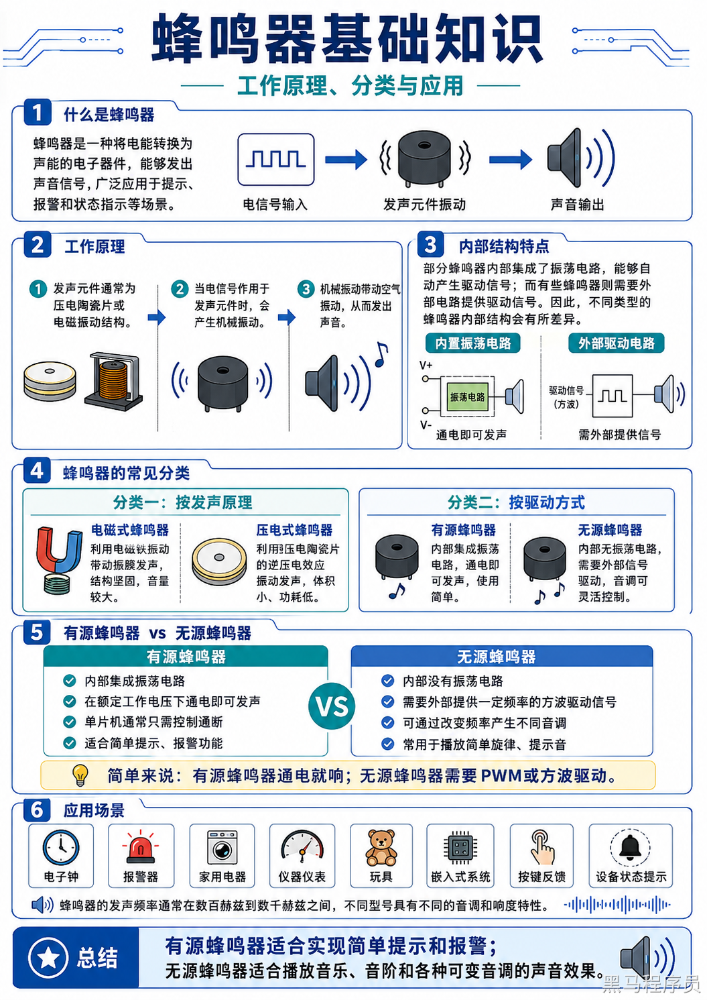
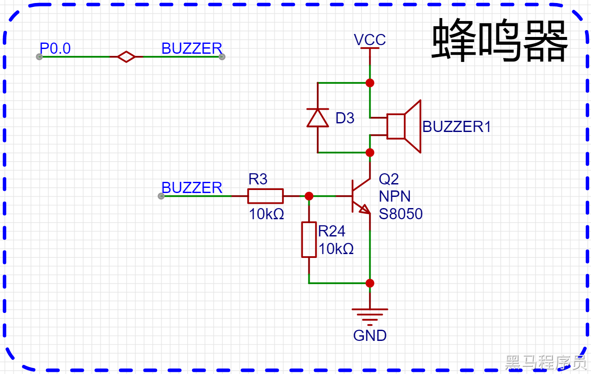
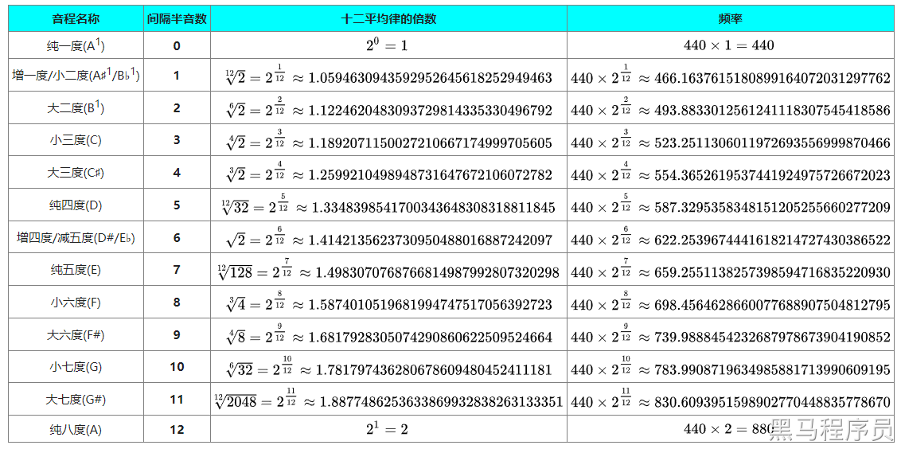
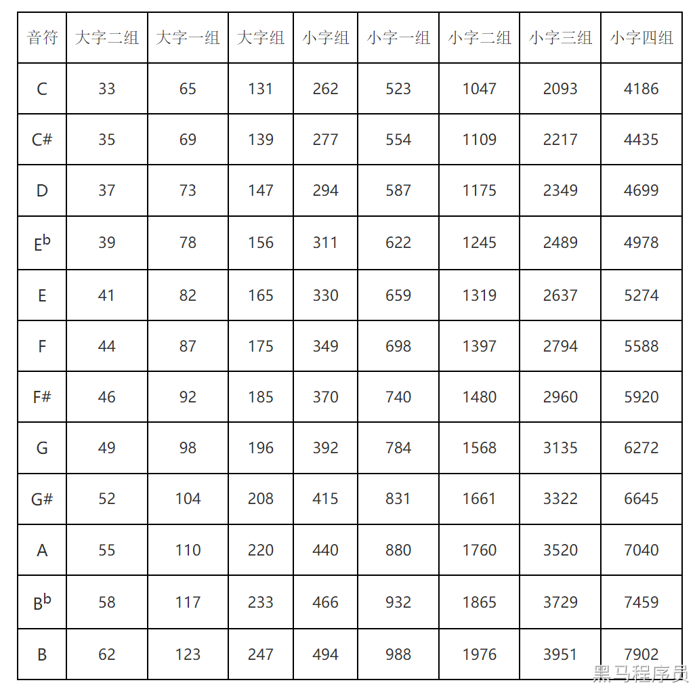
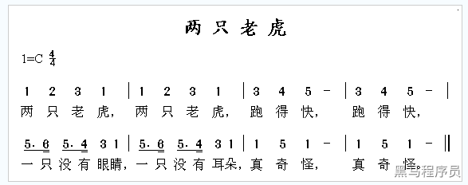
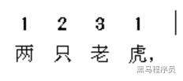
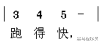
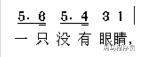

<!DOCTYPE lake>
<h2 data-lake-id="Yqf6h" id="Yqf6h"><span data-lake-id="ud99c9419" id="ud99c9419">学习目标</span></h2><ol list="uca501fa4"><li data-lake-id="u120ee45c" fid="ufe536ec3" id="u120ee45c"><span data-lake-id="u498a5ad7" id="u498a5ad7">理解原理图</span></li><li data-lake-id="u8806677a" fid="ufe536ec3" id="u8806677a"><span data-lake-id="u71730344" id="u71730344">了解蜂鸣器分类</span></li><li data-lake-id="uae327e51" fid="ufe536ec3" id="uae327e51"><span data-lake-id="u7697bddd" id="u7697bddd">实现蜂鸣器的简单发声</span></li><li data-lake-id="uac856031" fid="ufe536ec3" id="uac856031"><span data-lake-id="u71d5006d" id="u71d5006d">了解简单的乐理知识</span></li><li data-lake-id="u98188f43" fid="ufe536ec3" id="u98188f43"><span data-lake-id="u65df1f2d" id="u65df1f2d">实现音符播放</span></li><li data-lake-id="uc1d909d3" fid="ufe536ec3" id="uc1d909d3"><span data-lake-id="u212129dc" id="u212129dc">实现音乐播放</span></li></ol><h2 data-lake-id="eLrk4" id="eLrk4"><span data-lake-id="u5d6ec80f" id="u5d6ec80f">学习内容</span></h2><h3 data-lake-id="M8opz" id="M8opz"><span data-lake-id="uf7a161df" id="uf7a161df">蜂鸣器</span></h3><p data-lake-id="u5b5d056a" id="u5b5d056a"></p><p data-lake-id="u948147ac" id="u948147ac"><span data-lake-id="u77c0a738" id="u77c0a738">蜂鸣器是一种能够产生固定频率的声音的电子元件。它通常由振膜、震荡器、放大器和声音反馈电路等部分组成。振膜是蜂鸣器中最核心的部分，它能够将电信号转换为机械振动，产生声音。震荡器提供稳定的电信号，用于驱动振膜产生振动。放大器用于放大电信号的幅度，以便产生足够的声音。声音反馈电路可以提供反馈信号，帮助系统稳定。</span></p><p data-lake-id="u909ab21e" id="u909ab21e"><span data-lake-id="u715c0f1f" id="u715c0f1f">蜂鸣器广泛应用于电子设备中，例如电子钟、警报器、电子琴等。它们的声音频率通常在1 kHz到10 kHz之间，具有尖锐而刺耳的特点。蜂鸣器的种类很多，例如电磁式蜂鸣器、压电式蜂鸣器、有源蜂鸣器、无源蜂鸣器等等。不同类型的蜂鸣器具有不同的特点和应用场景。</span></p><p data-lake-id="u2408d485" id="u2408d485"><span data-lake-id="u49b88114" id="u49b88114">电子爱好者和开发者通常会使用蜂鸣器作为一种简单而有效的提示器件。例如，在嵌入式系统中，可以通过控制蜂鸣器发出不同的声音来实现提示、警报、提醒等功能。一些开发板和单片机也通常带有蜂鸣器接口，方便开发者使用。</span></p><p data-lake-id="ud94d503c" id="ud94d503c"><span data-lake-id="u89483a6e" id="u89483a6e">通常我们在开发中用到最多的是 有源蜂鸣器和无源蜂鸣器。有源的直接接电源即可发声。无源的需要连接一个变化频率的电源上，才能发出声音。</span></p><h3 data-lake-id="WlH0o" id="WlH0o"><span data-lake-id="u2f3a23b7" id="u2f3a23b7">原理图</span></h3><p data-lake-id="uc1ddd471" id="uc1ddd471"></p><ul list="u9612ea60"><li data-lake-id="u1a1846f1" fid="u6a4622ce" id="u1a1846f1"><span data-lake-id="u1a4f5314" id="u1a4f5314">采用P0.0引脚控制三极管的导通</span></li></ul><p data-lake-id="u14ffb9eb" id="u14ffb9eb"><strong><span data-lake-id="u2d10a3e4" id="u2d10a3e4">肖特基二极管：</span></strong></p><p data-lake-id="u9863dbb3" id="u9863dbb3"><span data-lake-id="ucc04390b" id="ucc04390b">当蜂鸣器在工作时，会产生电磁感应。</span></p><p data-lake-id="u86dd0fa3" id="u86dd0fa3"><span data-comment-id="41082583" data-lake-id="u05e79199" id="u05e79199">当电源关闭或蜂鸣器停止振动时，会产生一个瞬态的电压峰值，这会产生反向电流，可能会对电路及蜂鸣器造成损害或影响其寿命。肖特基二极管可以通过其低的正向电压降和快速反向恢复特性，有效地防止反向电流损害电路。</span></p><p data-lake-id="u9e29dcdb" id="u9e29dcdb"><span data-lake-id="u84e479bb" id="u84e479bb">此外，肖特基二极管的快速开关特性也能够减小蜂鸣器电路中的开关噪声和干扰，提高电路的稳定性和可靠性。因此，在蜂鸣器电路中加入肖特基二极管是一种常见的电路保护和稳定化措施。</span></p><h4 data-lake-id="zDAUb" id="zDAUb"><span data-lake-id="ub410fa29" id="ub410fa29">肖特基二极管的作用</span></h4><ol list="ued058232"><li data-lake-id="u0b0f72fe" fid="u1e9c28bc" id="u0b0f72fe"><span data-lake-id="u25ca681f" id="u25ca681f">快速开关：肖特基二极管具有快速的反向恢复特性，可以快速地从导通到截止转变，因此它通常用于高频开关电路中。</span></li><li data-lake-id="u22130f04" fid="u1e9c28bc" id="u22130f04"><span data-lake-id="u28d05a98" id="u28d05a98">低正向压降：与普通二极管相比，肖特基二极管具有更低的正向电压降，因此在需要低功耗和高效率的电路中使用时，肖特基二极管可以降低电路中的功耗和热损失。</span></li><li data-lake-id="u592bf9f9" fid="u1e9c28bc" id="u592bf9f9"><span data-lake-id="uc62c1bb3" id="uc62c1bb3">防反向漏电流：由于肖特基二极管是由金属和半导体接触组成的，因此在正向偏置时，不会发生少数载流子注入的现象，从而降低了漏电流。</span></li><li data-lake-id="u6ecfffc7" fid="u1e9c28bc" id="u6ecfffc7"><span data-lake-id="u88f39681" id="u88f39681">温度特性好：由于金属与半导体接触，所以肖特基二极管具有良好的温度特性。在高温环境下，肖特基二极管的电性能仍能保持稳定。</span></li></ol><p data-lake-id="ud15288cd" id="ud15288cd"><span data-lake-id="ub2f4d748" id="ub2f4d748">因此，肖特基二极管在高频开关电路、低功耗电路和功率电子等领域中得到了广泛的应用。</span></p><h4 data-lake-id="xwe5B" id="xwe5B"><span data-lake-id="u98cff034" id="u98cff034">三极管并联电阻</span></h4><p data-lake-id="u59bd9735" id="u59bd9735"><span data-lake-id="u1d5bdaba" id="u1d5bdaba">在三极管的放大电路中，通常会并联一个电阻，这个电阻被称为集电极负载电阻。</span></p><p data-lake-id="u7df6148d" id="u7df6148d"><span data-lake-id="u8e1afa18" id="u8e1afa18">这个集电极负载电阻的作用是：</span></p><ol list="ud52d5b59"><li data-lake-id="u60f3ea9e" fid="uad45f58a" id="u60f3ea9e"><span data-lake-id="u5f263390" id="u5f263390">稳定直流工作点：集电极负载电阻可以使三极管的直流工作点更加稳定。由于三极管是非线性器件，其直流放大倍数随着工作点的改变而变化。通过加入集电极负载电阻，可以限制直流工作点的漂移，保证放大电路的直流稳定性。</span></li><li data-lake-id="u999ccbb0" fid="uad45f58a" id="u999ccbb0"><span data-lake-id="u3671374c" id="u3671374c">改善交流性能：集电极负载电阻还可以改善放大电路的交流性能。通过控制集电极电流，可以改变三极管的放大倍数，从而实现对输入信号的放大。同时，集电极负载电阻还可以限制输出幅度，避免过度放大造成信号失真。</span></li><li data-lake-id="uf4594e5a" fid="uad45f58a" id="uf4594e5a"><span data-lake-id="u85f2bbb0" id="u85f2bbb0">防止三极管损坏：当输入信号过大时，三极管的集电极电压可能会超过其最大耐压值，从而造成三极管损坏。通过加入集电极负载电阻，可以限制输出幅度，避免超过三极管的最大耐压值，从而保护三极管。</span></li></ol><p data-lake-id="u89edd9ee" id="u89edd9ee"><span data-lake-id="ua28c6b97" id="ua28c6b97">因此，三极管放大电路中并联一个集电极负载电阻是一种常见的电路设计技巧，可以提高电路的性能和稳定性，同时保护三极管免受过电压损坏。</span></p><p data-lake-id="uc06153c6" id="uc06153c6"><span data-lake-id="u39aeb901" id="u39aeb901">​</span><br/></p><p data-lake-id="u91425f80" id="u91425f80"><span data-lake-id="u1d2d5385" id="u1d2d5385">在三极管放大电路中，集电极负载电阻的阻值会影响电路的放大倍数、直流工作点以及输出电阻等性能。</span></p><p data-lake-id="u287872dd" id="u287872dd"><span data-lake-id="u21f4cc1a" id="u21f4cc1a">通常情况下，集电极负载电阻的阻值需要根据具体的电路设计要求来确定。一般来说，阻值不应过大或过小，一般取值范围在几百欧姆到几千欧姆之间。</span></p><p data-lake-id="u293de518" id="u293de518"><span data-lake-id="u3adc68fe" id="u3adc68fe">如果集电极负载电阻的阻值太大，会导致放大倍数过低，使得电路的放大效果不理想。另外，由于三极管的输出电阻较小，集电极负载电阻的阻值过大还会导致电路的输出电阻过大，降低电路的输出功率。</span></p><p data-lake-id="u5b86b4d4" id="u5b86b4d4"><span data-lake-id="u20f80d92" id="u20f80d92">如果集电极负载电阻的阻值太小，会导致放大倍数过高，使得电路容易失真或产生饱和现象。同时，由于直流工作点的不稳定性，集电极负载电阻的阻值过小还会导致直流工作点的漂移，降低电路的直流稳定性。</span></p><p data-lake-id="ud2ec1c03" id="ud2ec1c03"><span data-lake-id="u512e1071" id="u512e1071">因此，在实际电路设计中，需要根据具体要求综合考虑电路性能和稳定性等因素，选取适当的集电极负载电阻阻值。</span></p><h3 data-lake-id="QbQGI" id="QbQGI"><span data-lake-id="uadac4a03" id="uadac4a03">测试发声</span></h3><span class="yuque-card-unsupported">[codeblock]</span><p data-lake-id="u38d452fa" id="u38d452fa"><span data-lake-id="u5512dfa5" id="u5512dfa5">通过控制</span><code data-lake-id="u5740d213" id="u5740d213"><span data-lake-id="uca8333cc" id="uca8333cc">delay_ms</span></code><span data-lake-id="u5f91391c" id="u5f91391c">的时间，控制发声的频率，来观察蜂鸣器的发声情况。</span></p><h3 data-lake-id="x18Oj" id="x18Oj"><span data-lake-id="ua54d3307" id="ua54d3307">乐理知识</span></h3><p data-lake-id="ub402f5de" id="ub402f5de"><span data-lake-id="ua5101403" id="ua5101403">乐理知识从专业角度来说，包含了很多内容，包括音高、音阶、节奏、和声、旋律、调性、节拍等等方面的知识。</span></p><blockquote data-lake-id="u91eb63bf" id="u91eb63bf"><p data-lake-id="u79f6f53b" id="u79f6f53b"><span data-lake-id="ucd1ea7ce" id="ucd1ea7ce">补充知识，不做要求。</span></p><ol list="u890b9c30"><li data-lake-id="uba7a32ed" fid="uec3ff4cf" id="uba7a32ed"><span data-lake-id="ue39f06fc" id="ue39f06fc">音高：音高是音乐中的一个基本元素，指的是声音高低的程度。常用的表示音高的符号是音符，不同的音高可以使用不同的音符来表示。</span></li><li data-lake-id="uc0ce9359" fid="uec3ff4cf" id="uc0ce9359"><span data-lake-id="u40aaab55" id="u40aaab55">音阶：音阶是一组按照音高顺序排列的音符组成的序列。常用的音阶包括了大调音阶和小调音阶等。</span></li><li data-lake-id="uc66deb5d" fid="uec3ff4cf" id="uc66deb5d"><span data-lake-id="u2777f48a" id="u2777f48a">节奏：节奏是指音乐中的强弱、快慢、持续时间等方面的时间关系。节奏可以通过节拍器或其他的打击乐器来表现。</span></li><li data-lake-id="uc4995a01" fid="uec3ff4cf" id="uc4995a01"><span data-lake-id="ucf094c69" id="ucf094c69">和声：和声是指多个声音同时进行时的相互关系。和声可以表现出不同的和声效果，如和弦、和声进程等。</span></li><li data-lake-id="u94c746a5" fid="uec3ff4cf" id="u94c746a5"><span data-lake-id="u0195ab19" id="u0195ab19">旋律：旋律是指音乐中的主旋律，是由一系列按照音高顺序排列的音符组成的。旋律可以使用不同的节奏来表现出不同的效果。</span></li><li data-lake-id="u374d0d6c" fid="uec3ff4cf" id="u374d0d6c"><span data-lake-id="u8cb8dd42" id="u8cb8dd42">调性：调性是指音乐中的调性关系。常用的调性包括了大调和小调等。</span></li><li data-lake-id="u6bc7660a" fid="uec3ff4cf" id="u6bc7660a"><span data-lake-id="u316491c9" id="u316491c9">节拍：节拍是指音乐中的基本的时间单位，用于表示节奏的强弱、快慢等方面的特征。节拍通常使用不同的时间符号来表示。</span></li><li data-lake-id="u02b6e0b0" fid="uec3ff4cf" id="u02b6e0b0"><span data-lake-id="u19f01090" id="u19f01090">同音重复：同音重复是指在不同的位置或时间上出现相同的音符或音高。</span></li></ol></blockquote><p data-lake-id="u0e907cf1" id="u0e907cf1"><span data-lake-id="ucb9355f9" id="ucb9355f9">在此呢，我们不研究更全面更深入的乐理知识，我们从我们的常识方面入手，了解简单的发声即可。</span></p><h4 data-lake-id="vyynL" id="vyynL"><span data-lake-id="u111561d6" id="u111561d6">哆来咪发唆拉西哆</span></h4><p data-lake-id="u24a6a794" id="u24a6a794"><span data-lake-id="ua3af7150" id="ua3af7150">哆来咪发唆拉西哆（Do-Re-Mi-Fa-So-La-Ti-Do）是音乐中的一个音阶记号，也是西方音乐中最基本的一个音阶。它由八个不同的音符组成，分别是：Do、Re、Mi、Fa、So、La、Ti、Do。这些音符分别代表了一个八度内的不同音高。</span></p><p data-lake-id="u9deae13b" id="u9deae13b"><span data-lake-id="uc81fe337" id="uc81fe337">在音乐教学中，哆来咪发唆拉西哆常常被用来作为基础训练的内容。通过唱出哆来咪发唆拉西哆，可以帮助学生了解不同音符之间的音高关系，掌握音乐中的基本音程和旋律。同时，哆来咪发唆拉西哆也是很多歌曲的基础，学会了这个音阶，就可以更好地理解和演唱这些歌曲。</span></p><p data-lake-id="u66c1e883" id="u66c1e883"><span data-lake-id="u769bfbf1" id="u769bfbf1">哆来咪发唆拉西哆可以用不同的乐谱表示方式来呈现。以下是常见的两种表示方式：</span></p><ol list="u0256e28f"><li data-lake-id="u49bf235f" fid="ub7631457" id="u49bf235f"><span data-lake-id="u38d826bd" id="u38d826bd">数字表示法：数字表示法将每个音符用数字来代表，Do为1，Re为2，Mi为3，Fa为4，So为5，La为6，Ti为7，Do（高八度）为8。因此，哆来咪发唆拉西哆的数字表示法为：1 2 3 4 5 6 7 8。</span></li><li data-lake-id="u131c8b0e" fid="ub7631457" id="u131c8b0e"><span data-lake-id="u0059f7e7" id="u0059f7e7">符号表示法：符号表示法用特定的符号来表示每个音符，包括大写字母（如C、D、E、F、G、A、B）、升降符号（如#、b）和八度符号（如'）。哆来咪发唆拉西哆的符号表示法为：C D E F G A B C'。</span></li></ol><p data-lake-id="uf1ca737e" id="uf1ca737e"><span data-lake-id="u5dc760f7" id="u5dc760f7">需要注意的是，不同的乐器和音高区间可能使用不同的记谱方式，但哆来咪发唆拉西哆作为最基本的音阶，通常都可以用以上两种方式表示。</span></p><h4 data-lake-id="EGRXo" id="EGRXo"><span data-lake-id="ucc3eec57" id="ucc3eec57">十二平均律</span></h4><p data-lake-id="ubf19eff3" id="ubf19eff3"><span data-lake-id="u0cce5c06" id="u0cce5c06">十二平均律是现代西方音乐中最广泛使用的音高系统，它的作用可以从以下几个方面来理解：</span></p><ol list="u212039e1"><li data-lake-id="ua300e0ea" fid="u613fb970" id="ua300e0ea"><span data-lake-id="u670e676b" id="u670e676b">方便协调和配合：由于十二平均律将八度音程划分成12个等分，每个等分的音高间隔相等，不同的调式可以使用相同的音高间隔，因此方便不同乐器、不同声部之间的协调和配合。</span></li><li data-lake-id="u2c76b936" fid="u613fb970" id="u2c76b936"><span data-lake-id="uc631978f" id="uc631978f">增加音乐的表现力：十二平均律中的半音音程比纯律（一种古老的音高系统）中的半音更小，因此可以创造更多的音高变化，增加音乐的表现力。</span></li><li data-lake-id="u936ea3f8" fid="u613fb970" id="u936ea3f8"><span data-lake-id="uf30c0dea" id="uf30c0dea">适应和反映现代音乐的需求：现代音乐中常常出现的复杂和离奇的调性变化，需要更加灵活和多变的音高体系，而十二平均律可以提供这种灵活性和多变性。</span></li></ol><p data-lake-id="u3a829fe1" id="u3a829fe1"><span data-lake-id="u7eabcaf9" id="u7eabcaf9">总之，十二平均律作为一种现代音乐基础的音高系统，为不同音乐风格和流派的发展提供了有力的支持，成为现代音乐的不可或缺的一部分。</span></p><blockquote data-lake-id="u772517fb" id="u772517fb"><p data-lake-id="u9e732d5a" id="u9e732d5a"><span data-lake-id="u9e02a03c" id="u9e02a03c">专业的术语理解起来比较抽象，对于乐理不是很了解的可以这样理解：</span></p><ol list="uec510ea2"><li data-lake-id="u9003c6e2" fid="ufc5392d9" id="u9003c6e2"><span data-lake-id="u294c413f" id="u294c413f">我们将音乐的音高分为12个等分。类似我们拼音中的4声(类比说法，还是有区别的)</span></li><li data-lake-id="u7621af87" fid="ufc5392d9" id="u7621af87"><span data-lake-id="uf4b26f87" id="uf4b26f87">我们在12个音高中对应了我们的哆来咪发唆拉西哆</span></li><li data-lake-id="uf446332a" fid="ufc5392d9" id="uf446332a"><span data-lake-id="ud064236a" id="ud064236a">要发出不同的音高，需要不同的频率来发声。</span></li></ol></blockquote><p data-lake-id="u98032338" id="u98032338"><a class="yuque-card-link" href="https://zh.wikipedia.org/wiki/%E5%8D%81%E4%BA%8C%E5%B9%B3%E5%9D%87%E5%BE%8B#%E5%8D%81%E4%BA%8C%E5%B9%B3%E5%9D%87%E5%BE%8B%E8%A1%A8" rel="noopener noreferrer" target="_blank">bookmarkInline：bookmarkInline</a></p><p data-lake-id="u6ee082a7" id="u6ee082a7"></p><p data-lake-id="u0d0d4def" id="u0d0d4def"><span data-lake-id="u0d79b0a0" id="u0d79b0a0">结合十二平均律和哆来咪发唆拉西哆的符号表示法，我们可以得到下表</span></p><table class="lake-table" data-lake-id="k618a" id="k618a" margin="true" style="width: 551px" width-mode="contain"><colgroup><col width="112"/><col width="101"/><col width="88"/><col width="250"/></colgroup><tbody><tr data-lake-id="uff2524b2" id="uff2524b2"><td data-lake-id="u98553cef" id="u98553cef" style="vertical-align: middle"><p data-lake-id="ub1aaabf3" id="ub1aaabf3" style="text-align: center"><span data-lake-id="u124d2c61" id="u124d2c61">音高</span></p></td><td data-lake-id="u81e26ff6" id="u81e26ff6" style="vertical-align: middle"><p data-lake-id="u87aa7344" id="u87aa7344" style="text-align: center"><span data-lake-id="u09842737" id="u09842737">数字表示</span></p></td><td data-lake-id="u144b1bf9" id="u144b1bf9" style="vertical-align: middle"><p data-lake-id="u100f4b1e" id="u100f4b1e" style="text-align: center"><span data-lake-id="u2f1c355b" id="u2f1c355b">符号表示</span></p></td><td data-lake-id="u91aa5abc" id="u91aa5abc" style="vertical-align: middle"><p data-lake-id="ue3393fe6" id="ue3393fe6" style="text-align: left"><span data-lake-id="uf257e724" id="uf257e724">频率</span></p></td></tr><tr data-lake-id="u480d9a4b" id="u480d9a4b"><td data-lake-id="ufafac3ca" id="ufafac3ca" style="vertical-align: middle"><p data-lake-id="u0dfd38ee" id="u0dfd38ee" style="text-align: center"><span data-lake-id="ucd7c743c" id="ucd7c743c">哆</span></p></td><td data-lake-id="u38273f12" id="u38273f12" style="vertical-align: middle"><p data-lake-id="u28e6f9cc" id="u28e6f9cc" style="text-align: center"><span data-lake-id="u909d7ae7" id="u909d7ae7">1</span></p></td><td data-lake-id="u0ef83a54" id="u0ef83a54" style="vertical-align: middle"><p data-lake-id="ub76b832e" id="ub76b832e" style="text-align: center"><span data-lake-id="u235e1a40" id="u235e1a40">C</span></p></td><td data-lake-id="uf1addb1f" id="uf1addb1f" style="vertical-align: middle"><p data-lake-id="u08800d0e" id="u08800d0e" style="text-align: left"><a class="yuque-card-link" href="https://cdn.nlark.com/yuque/__latex/96e43d3bd8beac7b8bdeed919ee60aaa.svg" rel="noopener noreferrer" target="_blank">math：math</a></p></td></tr><tr data-lake-id="u59937604" id="u59937604"><td data-lake-id="u91b6d5f7" id="u91b6d5f7" style="vertical-align: middle"><p data-lake-id="u9df1166d" id="u9df1166d" style="text-align: center"><span data-lake-id="u5ab78a1e" id="u5ab78a1e">来</span></p></td><td data-lake-id="u56ef7f16" id="u56ef7f16" style="vertical-align: middle"><p data-lake-id="u85492057" id="u85492057" style="text-align: center"><span data-lake-id="u91ed3f93" id="u91ed3f93">2</span></p></td><td data-lake-id="ue8784671" id="ue8784671" style="vertical-align: middle"><p data-lake-id="u14b430ea" id="u14b430ea" style="text-align: center"><span data-lake-id="u10f17520" id="u10f17520">D</span></p></td><td data-lake-id="u94f62c12" id="u94f62c12" style="vertical-align: middle"><p data-lake-id="uc0d68f69" id="uc0d68f69" style="text-align: left"><a class="yuque-card-link" href="https://cdn.nlark.com/yuque/__latex/a45494367e9b567f1835a4da86ce321a.svg" rel="noopener noreferrer" target="_blank">math：math</a></p></td></tr><tr data-lake-id="u5da296c3" id="u5da296c3"><td data-lake-id="u624af45e" id="u624af45e" style="vertical-align: middle"><p data-lake-id="u7163818b" id="u7163818b" style="text-align: center"><span data-lake-id="u8e400778" id="u8e400778">咪</span></p></td><td data-lake-id="u645780d0" id="u645780d0" style="vertical-align: middle"><p data-lake-id="u9abba05d" id="u9abba05d" style="text-align: center"><span data-lake-id="u6e3ae02d" id="u6e3ae02d">3</span></p></td><td data-lake-id="u90dff1a7" id="u90dff1a7" style="vertical-align: middle"><p data-lake-id="ued2dca60" id="ued2dca60" style="text-align: center"><span data-lake-id="u2c41317f" id="u2c41317f">E</span></p></td><td data-lake-id="u932b7e52" id="u932b7e52" style="vertical-align: middle"><p data-lake-id="u119c093f" id="u119c093f" style="text-align: left"><a class="yuque-card-link" href="https://cdn.nlark.com/yuque/__latex/bf983f0b91e2681d7a7bac2dc05d3565.svg" rel="noopener noreferrer" target="_blank">math：math</a></p></td></tr><tr data-lake-id="ua80ff9c6" id="ua80ff9c6"><td data-lake-id="u8e0d9d39" id="u8e0d9d39" style="vertical-align: middle"><p data-lake-id="u66806cd1" id="u66806cd1" style="text-align: center"><span data-lake-id="u40697a29" id="u40697a29">发</span></p></td><td data-lake-id="uce21155e" id="uce21155e" style="vertical-align: middle"><p data-lake-id="ufb2b9279" id="ufb2b9279" style="text-align: center"><span data-lake-id="u441ff22b" id="u441ff22b">4</span></p></td><td data-lake-id="ud1b7f8cf" id="ud1b7f8cf" style="vertical-align: middle"><p data-lake-id="u3a89d227" id="u3a89d227" style="text-align: center"><span data-lake-id="uf3a3bb8f" id="uf3a3bb8f">F</span></p></td><td data-lake-id="u7d4f2363" id="u7d4f2363" style="vertical-align: middle"><p data-lake-id="u289af27e" id="u289af27e" style="text-align: left"><a class="yuque-card-link" href="https://cdn.nlark.com/yuque/__latex/7386fd518323477b33f7e55539ce40a9.svg" rel="noopener noreferrer" target="_blank">math：math</a></p></td></tr><tr data-lake-id="ub9e5291c" id="ub9e5291c"><td data-lake-id="ufbb7bd6b" id="ufbb7bd6b" style="vertical-align: middle"><p data-lake-id="u33b1ed8e" id="u33b1ed8e" style="text-align: center"><span data-lake-id="u853924c0" id="u853924c0">唆</span></p></td><td data-lake-id="u68f9fa3c" id="u68f9fa3c" style="vertical-align: middle"><p data-lake-id="u17b00c31" id="u17b00c31" style="text-align: center"><span data-lake-id="u0c6949ee" id="u0c6949ee">5</span></p></td><td data-lake-id="u87d2cb1a" id="u87d2cb1a" style="vertical-align: middle"><p data-lake-id="u1075491d" id="u1075491d" style="text-align: center"><span data-lake-id="ua2ad9431" id="ua2ad9431">G</span></p></td><td data-lake-id="ub56da778" id="ub56da778" style="vertical-align: middle"><p data-lake-id="u9b612eb4" id="u9b612eb4" style="text-align: left"><a class="yuque-card-link" href="https://cdn.nlark.com/yuque/__latex/11a9f599a7caa95fb06446dc5fceaf87.svg" rel="noopener noreferrer" target="_blank">math：math</a></p></td></tr><tr data-lake-id="u11f5904f" id="u11f5904f"><td data-lake-id="u869a7cfe" id="u869a7cfe" style="vertical-align: middle"><p data-lake-id="u68281de3" id="u68281de3" style="text-align: center"><span data-lake-id="uf792ed83" id="uf792ed83">拉</span></p></td><td data-lake-id="u0e023f58" id="u0e023f58" style="vertical-align: middle"><p data-lake-id="u370540da" id="u370540da" style="text-align: center"><span data-lake-id="u35ae8e22" id="u35ae8e22">6</span></p></td><td data-lake-id="ub57cec40" id="ub57cec40" style="vertical-align: middle"><p data-lake-id="u4da37bca" id="u4da37bca" style="text-align: center"><span data-lake-id="u26035e92" id="u26035e92">A</span></p></td><td data-lake-id="u36a016bb" id="u36a016bb" style="vertical-align: middle"><p data-lake-id="u1120fb35" id="u1120fb35" style="text-align: left"><a class="yuque-card-link" href="https://cdn.nlark.com/yuque/__latex/eb91f7b375337346fa6a0dcf0a9da797.svg" rel="noopener noreferrer" target="_blank">math：math</a><span data-lake-id="ud50ae06b" id="ud50ae06b">​</span></p></td></tr><tr data-lake-id="u0c6a1cb0" id="u0c6a1cb0"><td data-lake-id="u6db04e58" id="u6db04e58" style="vertical-align: middle"><p data-lake-id="ubd7ad049" id="ubd7ad049" style="text-align: center"><span data-lake-id="u028a0036" id="u028a0036">西</span></p></td><td data-lake-id="u0da621a0" id="u0da621a0" style="vertical-align: middle"><p data-lake-id="u22f0b11d" id="u22f0b11d" style="text-align: center"><span data-lake-id="u3bfcc25f" id="u3bfcc25f">7</span></p></td><td data-lake-id="u15abfb62" id="u15abfb62" style="vertical-align: middle"><p data-lake-id="u75f1353b" id="u75f1353b" style="text-align: center"><span data-lake-id="u131dc176" id="u131dc176">B</span></p></td><td data-lake-id="uf7f4611f" id="uf7f4611f" style="vertical-align: middle"><p data-lake-id="u0b731c1d" id="u0b731c1d" style="text-align: left"><a class="yuque-card-link" href="https://cdn.nlark.com/yuque/__latex/566e65c49900e37323a4a9bbb1ab9868.svg" rel="noopener noreferrer" target="_blank">math：math</a></p></td></tr><tr data-lake-id="ufc699be9" id="ufc699be9"><td data-lake-id="u267ea296" id="u267ea296" style="vertical-align: middle"><p data-lake-id="ubb40814f" id="ubb40814f" style="text-align: center"><span data-lake-id="ub28786a1" id="ub28786a1">哆</span></p></td><td data-lake-id="u18f936be" id="u18f936be" style="vertical-align: middle"><p data-lake-id="u64ef670c" id="u64ef670c" style="text-align: center"><span data-lake-id="u159c10f2" id="u159c10f2">8</span></p></td><td data-lake-id="u433c7512" id="u433c7512" style="vertical-align: middle"><p data-lake-id="u826bb190" id="u826bb190" style="text-align: center"><span data-lake-id="u1071048f" id="u1071048f">C'</span></p></td><td data-lake-id="u75ee2467" id="u75ee2467" style="vertical-align: middle"><p data-lake-id="u69fec9b0" id="u69fec9b0" style="text-align: left"><a class="yuque-card-link" href="https://cdn.nlark.com/yuque/__latex/f8e738628a441b10ce44ad14af24236d.svg" rel="noopener noreferrer" target="_blank">math：math</a></p></td></tr></tbody></table><p data-lake-id="ub2d06592" id="ub2d06592"><span data-lake-id="u9f81ef86" id="u9f81ef86">此处的频率，就是我们的发声频率。</span></p><h4 data-lake-id="ASW1s" id="ASW1s"><span data-lake-id="u703c23a6" id="u703c23a6">乐理补充内容</span></h4><p data-lake-id="u8c29ce67" id="u8c29ce67"></p><p data-lake-id="uab8d7a9f" id="uab8d7a9f"><span data-lake-id="u8198eefd" id="u8198eefd">上表为 十二平均律基础率表与频率计算对照表：</span></p><p data-lake-id="u75832208" id="u75832208"><span data-lake-id="ue9fc16c1" id="ue9fc16c1">哆来咪发唆拉西哆 分别对应 </span><code data-lake-id="u2fcf3e22" id="u2fcf3e22"><span data-lake-id="u7de984d4" id="u7de984d4">C</span></code><code data-lake-id="u2135ac65" id="u2135ac65"><span data-lake-id="u02c4f879" id="u02c4f879">D</span></code><code data-lake-id="u06065304" id="u06065304"><span data-lake-id="u32722121" id="u32722121">E</span></code><code data-lake-id="u7825a7eb" id="u7825a7eb"><span data-lake-id="ua437ceac" id="ua437ceac">F</span></code><code data-lake-id="u19f122df" id="u19f122df"><span data-lake-id="u19f44abf" id="u19f44abf">G</span></code><code data-lake-id="ud2115652" id="ud2115652"><span data-lake-id="u7cec6623" id="u7cec6623">A</span></code><code data-lake-id="u5c846732" id="u5c846732"><span data-lake-id="u05e22898" id="u05e22898">B</span></code><code data-lake-id="udd7de643" id="udd7de643"><span data-lake-id="ub619f9e4" id="ub619f9e4">C下一组</span></code></p><p data-lake-id="udbc61c83" id="udbc61c83"><span data-lake-id="u3fb80863" id="u3fb80863">上面分为</span><code data-lake-id="u6e6ba0a7" id="u6e6ba0a7"><span data-lake-id="uff582875" id="uff582875">大字二组</span></code><code data-lake-id="ua6182e7e" id="ua6182e7e"><span data-lake-id="ua9c1087b" id="ua9c1087b">大字一组</span></code><code data-lake-id="udde981a7" id="udde981a7"><span data-lake-id="ue28bc49f" id="ue28bc49f">大字组</span></code><code data-lake-id="ua2323438" id="ua2323438"><span data-lake-id="ub086224e" id="ub086224e">小字组</span></code><code data-lake-id="u04fa3cb8" id="u04fa3cb8"><span data-lake-id="ucdda0643" id="ucdda0643">小字一组</span></code><code data-lake-id="u63739142" id="u63739142"><span data-lake-id="u24f70e75" id="u24f70e75">小字二组</span></code><code data-lake-id="u70ac0f4a" id="u70ac0f4a"><span data-lake-id="ud343e143" id="ud343e143">小字三组</span></code><code data-lake-id="ua5e2d27b" id="ua5e2d27b"><span data-lake-id="uc65528aa" id="uc65528aa">小字四组</span></code><span data-lake-id="u1a4c9e16" id="u1a4c9e16">。</span></p><p data-lake-id="u4aaad85b" id="u4aaad85b"><span data-lake-id="u47b321fe" id="u47b321fe">其实可以观察，他们的频率都是翻倍的。这些可以理解为音高不同。（有时候我们说唱歌时调子起高了，就是选了一组频率比较高的发声）</span></p><p data-lake-id="u94b088b2" id="u94b088b2"><span data-lake-id="ua97513c7" id="ua97513c7">通常有些频率单片机通过定时或者PWM不容易做到。</span></p><p data-lake-id="u8d5a5531" id="u8d5a5531"><span data-lake-id="ud51c45cc" id="ud51c45cc">​</span><br/></p><p data-lake-id="ufdb50162" id="ufdb50162"><strong><span data-lake-id="uc68b65de" id="uc68b65de">更完整的八度音阶Octave和音符对照表Note：</span></strong></p><table class="lake-table" data-lake-id="APePe" id="APePe" margin="true" style="width: 748px"><colgroup><col width="68"/><col width="68"/><col width="68"/><col width="68"/><col width="68"/><col width="68"/><col width="68"/><col width="68"/><col width="68"/><col width="68"/><col width="68"/></colgroup><tbody><tr data-lake-id="u34dad60a" id="u34dad60a"><td data-lake-id="u01cb3890" id="u01cb3890" style="background-color: rgb(239, 243, 245); vertical-align: middle"><p data-lake-id="u0cac10d8" id="u0cac10d8" style="text-align: left"><strong><span class="lake-fontsize-11" data-lake-id="u1047e019" id="u1047e019" style="color: rgb(79, 79, 79)">Octave→<br/></span></strong><strong><span class="lake-fontsize-11" data-lake-id="u63b5651e" id="u63b5651e" style="color: rgb(79, 79, 79)">Note↓</span></strong></p></td><td data-lake-id="u4a872de8" id="u4a872de8" style="background-color: rgb(239, 243, 245); vertical-align: middle"><p data-lake-id="u0775c138" id="u0775c138" style="text-align: center"><strong><span class="lake-fontsize-11" data-lake-id="uba836ff7" id="uba836ff7" style="color: rgb(79, 79, 79)">0</span></strong></p></td><td data-lake-id="ufbfb2204" id="ufbfb2204" style="background-color: rgb(239, 243, 245); vertical-align: middle"><p data-lake-id="ud28e0883" id="ud28e0883" style="text-align: center"><strong><span class="lake-fontsize-11" data-lake-id="u5e640946" id="u5e640946" style="color: rgb(79, 79, 79)">1</span></strong></p></td><td data-lake-id="ub2959990" id="ub2959990" style="background-color: rgb(239, 243, 245); vertical-align: middle"><p data-lake-id="u599cffb8" id="u599cffb8" style="text-align: center"><strong><span class="lake-fontsize-11" data-lake-id="ua674ea30" id="ua674ea30" style="color: rgb(79, 79, 79)">2</span></strong></p></td><td data-lake-id="ua7ca5bb1" id="ua7ca5bb1" style="background-color: rgb(239, 243, 245); vertical-align: middle"><p data-lake-id="u251a5333" id="u251a5333" style="text-align: center"><strong><span class="lake-fontsize-11" data-lake-id="u1a9091aa" id="u1a9091aa" style="color: rgb(79, 79, 79)">3</span></strong></p></td><td data-lake-id="uaf219708" id="uaf219708" style="background-color: rgb(239, 243, 245); vertical-align: middle"><p data-lake-id="u86576506" id="u86576506" style="text-align: center"><strong><span class="lake-fontsize-11" data-lake-id="u7bc4f6c4" id="u7bc4f6c4" style="color: rgb(79, 79, 79)">4</span></strong></p></td><td data-lake-id="u7508416e" id="u7508416e" style="background-color: rgb(239, 243, 245); vertical-align: middle"><p data-lake-id="u3882ef41" id="u3882ef41" style="text-align: center"><strong><span class="lake-fontsize-11" data-lake-id="u14d9bf8b" id="u14d9bf8b" style="color: rgb(79, 79, 79)">5</span></strong></p></td><td data-lake-id="u58f66a81" id="u58f66a81" style="background-color: rgb(239, 243, 245); vertical-align: middle"><p data-lake-id="udeb00701" id="udeb00701" style="text-align: center"><strong><span class="lake-fontsize-11" data-lake-id="u31b88b1a" id="u31b88b1a" style="color: rgb(79, 79, 79)">6</span></strong></p></td><td data-lake-id="u61cd2554" id="u61cd2554" style="background-color: rgb(239, 243, 245); vertical-align: middle"><p data-lake-id="u77ea662b" id="u77ea662b" style="text-align: center"><strong><span class="lake-fontsize-11" data-lake-id="ub9a4a8a0" id="ub9a4a8a0" style="color: rgb(79, 79, 79)">7</span></strong></p></td><td data-lake-id="u37707228" id="u37707228" style="background-color: rgb(239, 243, 245); vertical-align: middle"><p data-lake-id="u684118be" id="u684118be" style="text-align: center"><strong><span class="lake-fontsize-11" data-lake-id="u02cdf746" id="u02cdf746" style="color: rgb(79, 79, 79)">8</span></strong></p></td><td data-lake-id="ua549c70b" id="ua549c70b" style="background-color: rgb(239, 243, 245); vertical-align: middle"><p data-lake-id="uacd28da6" id="uacd28da6" style="text-align: center"><strong><span class="lake-fontsize-11" data-lake-id="u5d0ca892" id="u5d0ca892" style="color: rgb(79, 79, 79)">9</span></strong></p></td></tr><tr data-lake-id="u49924442" id="u49924442"><td data-lake-id="u6106b250" id="u6106b250" style="vertical-align: middle"><p data-lake-id="u9fac0804" id="u9fac0804" style="text-align: left"><span class="lake-fontsize-11" data-lake-id="u6652635e" id="u6652635e" style="color: rgb(79, 79, 79)">C</span></p></td><td data-lake-id="uf7e5d107" id="uf7e5d107"><p data-lake-id="uda8a7897" id="uda8a7897" style="text-align: left"><span class="lake-fontsize-11" data-lake-id="u534c4b61" id="u534c4b61" style="color: rgb(79, 79, 79)">16.352 (−48)</span></p></td><td data-lake-id="u61918132" id="u61918132"><p data-lake-id="u1cb00844" id="u1cb00844" style="text-align: left"><span class="lake-fontsize-11" data-lake-id="u7f160a49" id="u7f160a49" style="color: rgb(79, 79, 79)">32.703 (−36)</span></p></td><td data-lake-id="u5d3552c2" id="u5d3552c2"><p data-lake-id="ud1e0b21e" id="ud1e0b21e" style="text-align: left"><span class="lake-fontsize-11" data-lake-id="uc7760bff" id="uc7760bff" style="color: rgb(79, 79, 79)">65.406 (−24)</span></p></td><td data-lake-id="u6c628564" id="u6c628564"><p data-lake-id="u27b50c4d" id="u27b50c4d" style="text-align: left"><span class="lake-fontsize-11" data-lake-id="ub33e474a" id="ub33e474a" style="color: rgb(79, 79, 79)">130.81 (−12)</span></p></td><td data-lake-id="ufd3079f0" id="ufd3079f0"><p data-lake-id="uef49b790" id="uef49b790" style="text-align: left"><span class="lake-fontsize-11" data-lake-id="u48f96371" id="u48f96371" style="color: rgb(79, 79, 79)">261.63 (0)</span></p></td><td data-lake-id="u0fa5b63b" id="u0fa5b63b"><p data-lake-id="u51b0674e" id="u51b0674e" style="text-align: left"><span class="lake-fontsize-11" data-lake-id="ud49ab47d" id="ud49ab47d" style="color: rgb(79, 79, 79)">523.25 (+12)</span></p></td><td data-lake-id="u5afc4603" id="u5afc4603"><p data-lake-id="u26904b89" id="u26904b89" style="text-align: left"><span class="lake-fontsize-11" data-lake-id="u5d8afae3" id="u5d8afae3" style="color: rgb(79, 79, 79)">1046.5 (+24)</span></p></td><td data-lake-id="u55929cc6" id="u55929cc6"><p data-lake-id="ue387472e" id="ue387472e" style="text-align: left"><span class="lake-fontsize-11" data-lake-id="u7e760c02" id="u7e760c02" style="color: rgb(79, 79, 79)">2093.0 (+36)</span></p></td><td data-lake-id="u4b2e2a5d" id="u4b2e2a5d"><p data-lake-id="ude222edf" id="ude222edf" style="text-align: left"><span class="lake-fontsize-11" data-lake-id="u7596f965" id="u7596f965" style="color: rgb(79, 79, 79)">4186.0 (+48)</span></p></td><td data-lake-id="ue0c2a194" id="ue0c2a194"><p data-lake-id="u435b2500" id="u435b2500" style="text-align: left"><span class="lake-fontsize-11" data-lake-id="uaba656c8" id="uaba656c8" style="color: rgb(79, 79, 79)">8372.0 (+60)</span></p></td></tr><tr data-lake-id="u1825ad99" id="u1825ad99"><td data-lake-id="ud001f767" id="ud001f767" style="background-color: rgb(247, 247, 247); vertical-align: middle"><p data-lake-id="ubff17678" id="ubff17678" style="text-align: left"><span class="lake-fontsize-11" data-lake-id="u7e47d9f0" id="u7e47d9f0" style="color: rgb(79, 79, 79)">C♯/D♭</span></p></td><td data-lake-id="u21e85c1a" id="u21e85c1a" style="background-color: rgb(247, 247, 247)"><p data-lake-id="u7490c72b" id="u7490c72b" style="text-align: left"><span class="lake-fontsize-11" data-lake-id="u4760b06f" id="u4760b06f" style="color: rgb(79, 79, 79)">17.324 (−47)</span></p></td><td data-lake-id="uca2657a0" id="uca2657a0" style="background-color: rgb(247, 247, 247)"><p data-lake-id="u89d62935" id="u89d62935" style="text-align: left"><span class="lake-fontsize-11" data-lake-id="u144c8a53" id="u144c8a53" style="color: rgb(79, 79, 79)">34.648 (−35)</span></p></td><td data-lake-id="u80080e40" id="u80080e40" style="background-color: rgb(247, 247, 247)"><p data-lake-id="uab70b4cf" id="uab70b4cf" style="text-align: left"><span class="lake-fontsize-11" data-lake-id="u042a89c3" id="u042a89c3" style="color: rgb(79, 79, 79)">69.296 (−23)</span></p></td><td data-lake-id="u620f9b00" id="u620f9b00" style="background-color: rgb(247, 247, 247)"><p data-lake-id="u680ed736" id="u680ed736" style="text-align: left"><span class="lake-fontsize-11" data-lake-id="uc6031fea" id="uc6031fea" style="color: rgb(79, 79, 79)">138.59 (−11)</span></p></td><td data-lake-id="u4cd007dd" id="u4cd007dd" style="background-color: rgb(247, 247, 247)"><p data-lake-id="u6569d7c6" id="u6569d7c6" style="text-align: left"><span class="lake-fontsize-11" data-lake-id="u80e07060" id="u80e07060" style="color: rgb(79, 79, 79)">277.18 (+1)</span></p></td><td data-lake-id="u4fa56f63" id="u4fa56f63" style="background-color: rgb(247, 247, 247)"><p data-lake-id="ucac0003e" id="ucac0003e" style="text-align: left"><span class="lake-fontsize-11" data-lake-id="u920eacae" id="u920eacae" style="color: rgb(79, 79, 79)">554.37 (+13)</span></p></td><td data-lake-id="uf9adb4f5" id="uf9adb4f5" style="background-color: rgb(247, 247, 247)"><p data-lake-id="uda7aba91" id="uda7aba91" style="text-align: left"><span class="lake-fontsize-11" data-lake-id="u3371aebe" id="u3371aebe" style="color: rgb(79, 79, 79)">1108.7 (+25)</span></p></td><td data-lake-id="u3f37ad0f" id="u3f37ad0f" style="background-color: rgb(247, 247, 247)"><p data-lake-id="ub370ad6c" id="ub370ad6c" style="text-align: left"><span class="lake-fontsize-11" data-lake-id="u0468384c" id="u0468384c" style="color: rgb(79, 79, 79)">2217.5 (+37)</span></p></td><td data-lake-id="ufea3cc15" id="ufea3cc15" style="background-color: rgb(247, 247, 247)"><p data-lake-id="uc5e40a9e" id="uc5e40a9e" style="text-align: left"><span class="lake-fontsize-11" data-lake-id="u1d0a1bf2" id="u1d0a1bf2" style="color: rgb(79, 79, 79)">4434.9 (+49)</span></p></td><td data-lake-id="u3110f787" id="u3110f787" style="background-color: rgb(247, 247, 247)"><p data-lake-id="u48f9ac60" id="u48f9ac60" style="text-align: left"><span class="lake-fontsize-11" data-lake-id="u61d3a2ca" id="u61d3a2ca" style="color: rgb(79, 79, 79)">8869.8 (+61)</span></p></td></tr><tr data-lake-id="u4427bfdb" id="u4427bfdb"><td data-lake-id="u0efe94cb" id="u0efe94cb" style="vertical-align: middle"><p data-lake-id="u7c2b9df6" id="u7c2b9df6" style="text-align: left"><span class="lake-fontsize-11" data-lake-id="uc9adf509" id="uc9adf509" style="color: rgb(79, 79, 79)">D</span></p></td><td data-lake-id="u4eac85ea" id="u4eac85ea"><p data-lake-id="u3e5f3541" id="u3e5f3541" style="text-align: left"><span class="lake-fontsize-11" data-lake-id="u6b5a92ac" id="u6b5a92ac" style="color: rgb(79, 79, 79)">18.354 (−46)</span></p></td><td data-lake-id="u16350997" id="u16350997"><p data-lake-id="uf0a8fb52" id="uf0a8fb52" style="text-align: left"><span class="lake-fontsize-11" data-lake-id="u6653267f" id="u6653267f" style="color: rgb(79, 79, 79)">36.708 (−34)</span></p></td><td data-lake-id="u47926991" id="u47926991"><p data-lake-id="u94a481d4" id="u94a481d4" style="text-align: left"><span class="lake-fontsize-11" data-lake-id="u8af0f2fa" id="u8af0f2fa" style="color: rgb(79, 79, 79)">73.416 (−22)</span></p></td><td data-lake-id="uf4ab6774" id="uf4ab6774"><p data-lake-id="uf785a449" id="uf785a449" style="text-align: left"><span class="lake-fontsize-11" data-lake-id="u45835b7d" id="u45835b7d" style="color: rgb(79, 79, 79)">146.83 (−10)</span></p></td><td data-lake-id="u83c74a8e" id="u83c74a8e"><p data-lake-id="u3a684436" id="u3a684436" style="text-align: left"><span class="lake-fontsize-11" data-lake-id="u90f9468f" id="u90f9468f" style="color: rgb(79, 79, 79)">293.66 (+2)</span></p></td><td data-lake-id="u6fd1e831" id="u6fd1e831"><p data-lake-id="uf05f13d7" id="uf05f13d7" style="text-align: left"><span class="lake-fontsize-11" data-lake-id="u567c31ff" id="u567c31ff" style="color: rgb(79, 79, 79)">587.33 (+14)</span></p></td><td data-lake-id="ub04ca3e2" id="ub04ca3e2"><p data-lake-id="u21d75e59" id="u21d75e59" style="text-align: left"><span class="lake-fontsize-11" data-lake-id="u86cbab6a" id="u86cbab6a" style="color: rgb(79, 79, 79)">1174.7 (+26)</span></p></td><td data-lake-id="ud0a59a64" id="ud0a59a64"><p data-lake-id="u22a3c1d8" id="u22a3c1d8" style="text-align: left"><span class="lake-fontsize-11" data-lake-id="u2ce66126" id="u2ce66126" style="color: rgb(79, 79, 79)">2349.3 (+38)</span></p></td><td data-lake-id="u19261422" id="u19261422"><p data-lake-id="u859f8a31" id="u859f8a31" style="text-align: left"><span class="lake-fontsize-11" data-lake-id="u2228603b" id="u2228603b" style="color: rgb(79, 79, 79)">4698.6 (+50)</span></p></td><td data-lake-id="ubb0acd19" id="ubb0acd19"><p data-lake-id="ue4ba36f0" id="ue4ba36f0" style="text-align: left"><span class="lake-fontsize-11" data-lake-id="udbf94ccf" id="udbf94ccf" style="color: rgb(79, 79, 79)">9397.3 (+62)</span></p></td></tr><tr data-lake-id="u0d5a028e" id="u0d5a028e"><td data-lake-id="u45b4aa62" id="u45b4aa62" style="background-color: rgb(247, 247, 247); vertical-align: middle"><p data-lake-id="u5c0e28d7" id="u5c0e28d7" style="text-align: left"><span class="lake-fontsize-11" data-lake-id="u9699857d" id="u9699857d" style="color: rgb(79, 79, 79)">D♯/E♭</span></p></td><td data-lake-id="u465da170" id="u465da170" style="background-color: rgb(247, 247, 247)"><p data-lake-id="u5e9caaae" id="u5e9caaae" style="text-align: left"><span class="lake-fontsize-11" data-lake-id="u2c9f1905" id="u2c9f1905" style="color: rgb(79, 79, 79)">19.445 (−45)</span></p></td><td data-lake-id="u0fd203c6" id="u0fd203c6" style="background-color: rgb(247, 247, 247)"><p data-lake-id="uc8368190" id="uc8368190" style="text-align: left"><span class="lake-fontsize-11" data-lake-id="u184d06fb" id="u184d06fb" style="color: rgb(79, 79, 79)">38.891 (−33)</span></p></td><td data-lake-id="u9b79c0c9" id="u9b79c0c9" style="background-color: rgb(247, 247, 247)"><p data-lake-id="u98ba425f" id="u98ba425f" style="text-align: left"><span class="lake-fontsize-11" data-lake-id="u71ff4473" id="u71ff4473" style="color: rgb(79, 79, 79)">77.782 (−21)</span></p></td><td data-lake-id="u91da95c8" id="u91da95c8" style="background-color: rgb(247, 247, 247)"><p data-lake-id="u26a2e298" id="u26a2e298" style="text-align: left"><span class="lake-fontsize-11" data-lake-id="ua91772f3" id="ua91772f3" style="color: rgb(79, 79, 79)">155.56 (−9)</span></p></td><td data-lake-id="u729da0e5" id="u729da0e5" style="background-color: rgb(247, 247, 247)"><p data-lake-id="u4d05f56d" id="u4d05f56d" style="text-align: left"><span class="lake-fontsize-11" data-lake-id="ucccaaa18" id="ucccaaa18" style="color: rgb(79, 79, 79)">311.13 (+3)</span></p></td><td data-lake-id="u511ec877" id="u511ec877" style="background-color: rgb(247, 247, 247)"><p data-lake-id="uf529f9d2" id="uf529f9d2" style="text-align: left"><span class="lake-fontsize-11" data-lake-id="ue168c69d" id="ue168c69d" style="color: rgb(79, 79, 79)">622.25 (+15)</span></p></td><td data-lake-id="ua47b6efd" id="ua47b6efd" style="background-color: rgb(247, 247, 247)"><p data-lake-id="uab4eb05b" id="uab4eb05b" style="text-align: left"><span class="lake-fontsize-11" data-lake-id="u0644498d" id="u0644498d" style="color: rgb(79, 79, 79)">1244.5 (+27)</span></p></td><td data-lake-id="u6fbe71a6" id="u6fbe71a6" style="background-color: rgb(247, 247, 247)"><p data-lake-id="u037dac1d" id="u037dac1d" style="text-align: left"><span class="lake-fontsize-11" data-lake-id="u58d16bef" id="u58d16bef" style="color: rgb(79, 79, 79)">2489.0 (+39)</span></p></td><td data-lake-id="ua33626b9" id="ua33626b9" style="background-color: rgb(247, 247, 247)"><p data-lake-id="u099ac73e" id="u099ac73e" style="text-align: left"><span class="lake-fontsize-11" data-lake-id="ua69d514b" id="ua69d514b" style="color: rgb(79, 79, 79)">4978.0 (+51)</span></p></td><td data-lake-id="uead3d9ce" id="uead3d9ce" style="background-color: rgb(247, 247, 247)"><p data-lake-id="u667518ed" id="u667518ed" style="text-align: left"><span class="lake-fontsize-11" data-lake-id="u50831de6" id="u50831de6" style="color: rgb(79, 79, 79)">9956.1 (+63)</span></p></td></tr><tr data-lake-id="u342a9369" id="u342a9369"><td data-lake-id="ud0caf580" id="ud0caf580" style="vertical-align: middle"><p data-lake-id="u67b45480" id="u67b45480" style="text-align: left"><span class="lake-fontsize-11" data-lake-id="udb3c3db9" id="udb3c3db9" style="color: rgb(79, 79, 79)">E</span></p></td><td data-lake-id="u7ea35c3c" id="u7ea35c3c"><p data-lake-id="u48a18aaf" id="u48a18aaf" style="text-align: left"><span class="lake-fontsize-11" data-lake-id="udd8ca998" id="udd8ca998" style="color: rgb(79, 79, 79)">20.602 (−44)</span></p></td><td data-lake-id="u65d7bab0" id="u65d7bab0"><p data-lake-id="u660355d6" id="u660355d6" style="text-align: left"><span class="lake-fontsize-11" data-lake-id="u505b6e92" id="u505b6e92" style="color: rgb(79, 79, 79)">41.203 (−32)</span></p></td><td data-lake-id="u6cff26d0" id="u6cff26d0"><p data-lake-id="u1de3d112" id="u1de3d112" style="text-align: left"><span class="lake-fontsize-11" data-lake-id="u653f12e6" id="u653f12e6" style="color: rgb(79, 79, 79)">82.407 (−20)</span></p></td><td data-lake-id="u693691f5" id="u693691f5"><p data-lake-id="u455d3d7f" id="u455d3d7f" style="text-align: left"><span class="lake-fontsize-11" data-lake-id="u88137796" id="u88137796" style="color: rgb(79, 79, 79)">164.81 (−8)</span></p></td><td data-lake-id="u2a19f343" id="u2a19f343"><p data-lake-id="u69c30088" id="u69c30088" style="text-align: left"><span class="lake-fontsize-11" data-lake-id="uaddcdfd2" id="uaddcdfd2" style="color: rgb(79, 79, 79)">329.63 (+4)</span></p></td><td data-lake-id="u694edc14" id="u694edc14"><p data-lake-id="ua5b3744f" id="ua5b3744f" style="text-align: left"><span class="lake-fontsize-11" data-lake-id="ub0e574ba" id="ub0e574ba" style="color: rgb(79, 79, 79)">659.26 (+16)</span></p></td><td data-lake-id="uc04b97da" id="uc04b97da"><p data-lake-id="u5d803114" id="u5d803114" style="text-align: left"><span class="lake-fontsize-11" data-lake-id="ue302bf1b" id="ue302bf1b" style="color: rgb(79, 79, 79)">1318.5 (+28)</span></p></td><td data-lake-id="u71e62d40" id="u71e62d40"><p data-lake-id="u4bcf9418" id="u4bcf9418" style="text-align: left"><span class="lake-fontsize-11" data-lake-id="u4fc8def7" id="u4fc8def7" style="color: rgb(79, 79, 79)">2637.0 (+40)</span></p></td><td data-lake-id="u1a5f2241" id="u1a5f2241"><p data-lake-id="u76bef856" id="u76bef856" style="text-align: left"><span class="lake-fontsize-11" data-lake-id="u71a984f1" id="u71a984f1" style="color: rgb(79, 79, 79)">5274.0 (+52)</span></p></td><td data-lake-id="uea129b27" id="uea129b27"><p data-lake-id="u5aefa991" id="u5aefa991" style="text-align: left"><span class="lake-fontsize-11" data-lake-id="ua750d2fc" id="ua750d2fc" style="color: rgb(79, 79, 79)">10548 (+64)</span></p></td></tr><tr data-lake-id="u57f54a6c" id="u57f54a6c"><td data-lake-id="u5b6e2934" id="u5b6e2934" style="background-color: rgb(247, 247, 247); vertical-align: middle"><p data-lake-id="u512172e2" id="u512172e2" style="text-align: left"><span class="lake-fontsize-11" data-lake-id="uf1edab8a" id="uf1edab8a" style="color: rgb(79, 79, 79)">F</span></p></td><td data-lake-id="uf1317781" id="uf1317781" style="background-color: rgb(247, 247, 247)"><p data-lake-id="u0cabc4bc" id="u0cabc4bc" style="text-align: left"><span class="lake-fontsize-11" data-lake-id="uf30f07c6" id="uf30f07c6" style="color: rgb(79, 79, 79)">21.827 (−43)</span></p></td><td data-lake-id="ufeb65b29" id="ufeb65b29" style="background-color: rgb(247, 247, 247)"><p data-lake-id="u7b5f1f16" id="u7b5f1f16" style="text-align: left"><span class="lake-fontsize-11" data-lake-id="u0ff8f630" id="u0ff8f630" style="color: rgb(79, 79, 79)">43.654 (−31)</span></p></td><td data-lake-id="u49d7762d" id="u49d7762d" style="background-color: rgb(247, 247, 247)"><p data-lake-id="uaa6f30c7" id="uaa6f30c7" style="text-align: left"><span class="lake-fontsize-11" data-lake-id="u52d0b4b0" id="u52d0b4b0" style="color: rgb(79, 79, 79)">87.307 (−19)</span></p></td><td data-lake-id="u06a91dfe" id="u06a91dfe" style="background-color: rgb(247, 247, 247)"><p data-lake-id="ud5071c03" id="ud5071c03" style="text-align: left"><span class="lake-fontsize-11" data-lake-id="u23a019a9" id="u23a019a9" style="color: rgb(79, 79, 79)">174.61 (−7)</span></p></td><td data-lake-id="ud2775175" id="ud2775175" style="background-color: rgb(247, 247, 247)"><p data-lake-id="u140424ab" id="u140424ab" style="text-align: left"><span class="lake-fontsize-11" data-lake-id="u9634e1da" id="u9634e1da" style="color: rgb(79, 79, 79)">349.23 (+5)</span></p></td><td data-lake-id="u640e40a6" id="u640e40a6" style="background-color: rgb(247, 247, 247)"><p data-lake-id="u1368d728" id="u1368d728" style="text-align: left"><span class="lake-fontsize-11" data-lake-id="uf1a19806" id="uf1a19806" style="color: rgb(79, 79, 79)">698.46 (+17)</span></p></td><td data-lake-id="uc9aabf25" id="uc9aabf25" style="background-color: rgb(247, 247, 247)"><p data-lake-id="u2a57c9a5" id="u2a57c9a5" style="text-align: left"><span class="lake-fontsize-11" data-lake-id="u0ebacbfe" id="u0ebacbfe" style="color: rgb(79, 79, 79)">1396.9 (+29)</span></p></td><td data-lake-id="u8e5ed4f5" id="u8e5ed4f5" style="background-color: rgb(247, 247, 247)"><p data-lake-id="u9f7dd4be" id="u9f7dd4be" style="text-align: left"><span class="lake-fontsize-11" data-lake-id="uebee7daa" id="uebee7daa" style="color: rgb(79, 79, 79)">2793.8 (+41)</span></p></td><td data-lake-id="ub78f9af9" id="ub78f9af9" style="background-color: rgb(247, 247, 247)"><p data-lake-id="u67b19e30" id="u67b19e30" style="text-align: left"><span class="lake-fontsize-11" data-lake-id="udfb791d3" id="udfb791d3" style="color: rgb(79, 79, 79)">5587.7 (+53)</span></p></td><td data-lake-id="u3de4e43a" id="u3de4e43a" style="background-color: rgb(247, 247, 247)"><p data-lake-id="ud1622fbd" id="ud1622fbd" style="text-align: left"><span class="lake-fontsize-11" data-lake-id="ud7b05f5f" id="ud7b05f5f" style="color: rgb(79, 79, 79)">11175 (+65)</span></p></td></tr><tr data-lake-id="ud738dfaa" id="ud738dfaa"><td data-lake-id="u49ac46b8" id="u49ac46b8" style="vertical-align: middle"><p data-lake-id="u5a0cf35e" id="u5a0cf35e" style="text-align: left"><span class="lake-fontsize-11" data-lake-id="ufc6801ce" id="ufc6801ce" style="color: rgb(79, 79, 79)">F♯/G♭</span></p></td><td data-lake-id="u5e514b29" id="u5e514b29"><p data-lake-id="u831897c4" id="u831897c4" style="text-align: left"><span class="lake-fontsize-11" data-lake-id="u23ea727c" id="u23ea727c" style="color: rgb(79, 79, 79)">23.125 (−42)</span></p></td><td data-lake-id="u396be2e4" id="u396be2e4"><p data-lake-id="u5a372cce" id="u5a372cce" style="text-align: left"><span class="lake-fontsize-11" data-lake-id="u05eb1e3c" id="u05eb1e3c" style="color: rgb(79, 79, 79)">46.249 (−30)</span></p></td><td data-lake-id="u03903c6f" id="u03903c6f"><p data-lake-id="ud6c80de4" id="ud6c80de4" style="text-align: left"><span class="lake-fontsize-11" data-lake-id="u9f18beec" id="u9f18beec" style="color: rgb(79, 79, 79)">92.499 (−18)</span></p></td><td data-lake-id="u70c66072" id="u70c66072"><p data-lake-id="uaf813855" id="uaf813855" style="text-align: left"><span class="lake-fontsize-11" data-lake-id="u274bd7ca" id="u274bd7ca" style="color: rgb(79, 79, 79)">185.00 (−6)</span></p></td><td data-lake-id="ud749882b" id="ud749882b"><p data-lake-id="uaedc6539" id="uaedc6539" style="text-align: left"><span class="lake-fontsize-11" data-lake-id="u3895ae31" id="u3895ae31" style="color: rgb(79, 79, 79)">369.99 (+6)</span></p></td><td data-lake-id="ufbd73f1b" id="ufbd73f1b"><p data-lake-id="u72b039c1" id="u72b039c1" style="text-align: left"><span class="lake-fontsize-11" data-lake-id="ub2009442" id="ub2009442" style="color: rgb(79, 79, 79)">739.99 (+18)</span></p></td><td data-lake-id="ua9a9aa6c" id="ua9a9aa6c"><p data-lake-id="uf6f0bd00" id="uf6f0bd00" style="text-align: left"><span class="lake-fontsize-11" data-lake-id="u68297de5" id="u68297de5" style="color: rgb(79, 79, 79)">1480.0 (+30)</span></p></td><td data-lake-id="uc3028cbb" id="uc3028cbb"><p data-lake-id="u1fb34412" id="u1fb34412" style="text-align: left"><span class="lake-fontsize-11" data-lake-id="u7711da63" id="u7711da63" style="color: rgb(79, 79, 79)">2960.0 (+42)</span></p></td><td data-lake-id="u9abb3dbb" id="u9abb3dbb"><p data-lake-id="ua4601a7d" id="ua4601a7d" style="text-align: left"><span class="lake-fontsize-11" data-lake-id="u1ba025ed" id="u1ba025ed" style="color: rgb(79, 79, 79)">5919.9 (+54)</span></p></td><td data-lake-id="u18613b74" id="u18613b74"><p data-lake-id="u8924b360" id="u8924b360" style="text-align: left"><span class="lake-fontsize-11" data-lake-id="u641c0cbe" id="u641c0cbe" style="color: rgb(79, 79, 79)">11840 (+66)</span></p></td></tr><tr data-lake-id="ufc1f3c8a" id="ufc1f3c8a"><td data-lake-id="u43c4cd0b" id="u43c4cd0b" style="background-color: rgb(247, 247, 247); vertical-align: middle"><p data-lake-id="ue8e0bebe" id="ue8e0bebe" style="text-align: left"><span class="lake-fontsize-11" data-lake-id="u5ee635fb" id="u5ee635fb" style="color: rgb(79, 79, 79)">G</span></p></td><td data-lake-id="u05b8abbc" id="u05b8abbc" style="background-color: rgb(247, 247, 247)"><p data-lake-id="u4d64a9c3" id="u4d64a9c3" style="text-align: left"><span class="lake-fontsize-11" data-lake-id="uc6c42657" id="uc6c42657" style="color: rgb(79, 79, 79)">24.500 (−41)</span></p></td><td data-lake-id="ue3d6940a" id="ue3d6940a" style="background-color: rgb(247, 247, 247)"><p data-lake-id="ua7ed6330" id="ua7ed6330" style="text-align: left"><span class="lake-fontsize-11" data-lake-id="ue060ff7e" id="ue060ff7e" style="color: rgb(79, 79, 79)">48.999 (−29)</span></p></td><td data-lake-id="u25e34a1f" id="u25e34a1f" style="background-color: rgb(247, 247, 247)"><p data-lake-id="u1d51b881" id="u1d51b881" style="text-align: left"><span class="lake-fontsize-11" data-lake-id="uc6318c9e" id="uc6318c9e" style="color: rgb(79, 79, 79)">97.999 (−17)</span></p></td><td data-lake-id="u759b9b0a" id="u759b9b0a" style="background-color: rgb(247, 247, 247)"><p data-lake-id="uab657937" id="uab657937" style="text-align: left"><span class="lake-fontsize-11" data-lake-id="u98c6e4cb" id="u98c6e4cb" style="color: rgb(79, 79, 79)">196.00 (−5)</span></p></td><td data-lake-id="u8c3c2233" id="u8c3c2233" style="background-color: rgb(247, 247, 247)"><p data-lake-id="u1c5ed27f" id="u1c5ed27f" style="text-align: left"><span class="lake-fontsize-11" data-lake-id="u68895a01" id="u68895a01" style="color: rgb(79, 79, 79)">392.00 (+7)</span></p></td><td data-lake-id="ue957828b" id="ue957828b" style="background-color: rgb(247, 247, 247)"><p data-lake-id="u9588c572" id="u9588c572" style="text-align: left"><span class="lake-fontsize-11" data-lake-id="u408831ec" id="u408831ec" style="color: rgb(79, 79, 79)">783.99 (+19)</span></p></td><td data-lake-id="u034fb6b7" id="u034fb6b7" style="background-color: rgb(247, 247, 247)"><p data-lake-id="u8182ecfd" id="u8182ecfd" style="text-align: left"><span class="lake-fontsize-11" data-lake-id="u51ea814e" id="u51ea814e" style="color: rgb(79, 79, 79)">1568.0 (+31)</span></p></td><td data-lake-id="u26333d1e" id="u26333d1e" style="background-color: rgb(247, 247, 247)"><p data-lake-id="u6500c775" id="u6500c775" style="text-align: left"><span class="lake-fontsize-11" data-lake-id="u29d93187" id="u29d93187" style="color: rgb(79, 79, 79)">3136.0 (+43)</span></p></td><td data-lake-id="u4bc09249" id="u4bc09249" style="background-color: rgb(247, 247, 247)"><p data-lake-id="u27c5d3ae" id="u27c5d3ae" style="text-align: left"><span class="lake-fontsize-11" data-lake-id="uceb7b8d1" id="uceb7b8d1" style="color: rgb(79, 79, 79)">6271.9 (+55)</span></p></td><td data-lake-id="u66b1a185" id="u66b1a185" style="background-color: rgb(247, 247, 247)"><p data-lake-id="uf21469cb" id="uf21469cb" style="text-align: left"><span class="lake-fontsize-11" data-lake-id="ua4e67ac6" id="ua4e67ac6" style="color: rgb(79, 79, 79)">12544 (+67)</span></p></td></tr><tr data-lake-id="u5084630f" id="u5084630f"><td data-lake-id="u12f38e38" id="u12f38e38" style="vertical-align: middle"><p data-lake-id="u205c70d6" id="u205c70d6" style="text-align: left"><span class="lake-fontsize-11" data-lake-id="uce0329e2" id="uce0329e2" style="color: rgb(79, 79, 79)">G♯/A♭</span></p></td><td data-lake-id="uae619bb0" id="uae619bb0"><p data-lake-id="uef33d7a4" id="uef33d7a4" style="text-align: left"><span class="lake-fontsize-11" data-lake-id="u233afe66" id="u233afe66" style="color: rgb(79, 79, 79)">25.957 (−40)</span></p></td><td data-lake-id="u932318c9" id="u932318c9"><p data-lake-id="u829a7226" id="u829a7226" style="text-align: left"><span class="lake-fontsize-11" data-lake-id="u0679483e" id="u0679483e" style="color: rgb(79, 79, 79)">51.913 (−28)</span></p></td><td data-lake-id="u3966e834" id="u3966e834"><p data-lake-id="u3a7f0efa" id="u3a7f0efa" style="text-align: left"><span class="lake-fontsize-11" data-lake-id="u5d69a63b" id="u5d69a63b" style="color: rgb(79, 79, 79)">103.83 (−16)</span></p></td><td data-lake-id="u7a42064a" id="u7a42064a"><p data-lake-id="u9b1a5aaa" id="u9b1a5aaa" style="text-align: left"><span class="lake-fontsize-11" data-lake-id="ua6d56fe0" id="ua6d56fe0" style="color: rgb(79, 79, 79)">207.65 (−4)</span></p></td><td data-lake-id="uf2aa2ec9" id="uf2aa2ec9"><p data-lake-id="u9d49f8a4" id="u9d49f8a4" style="text-align: left"><span class="lake-fontsize-11" data-lake-id="uc95c0f83" id="uc95c0f83" style="color: rgb(79, 79, 79)">415.30 (+8)</span></p></td><td data-lake-id="u7a75e78c" id="u7a75e78c"><p data-lake-id="u331a2b74" id="u331a2b74" style="text-align: left"><span class="lake-fontsize-11" data-lake-id="ubd02c1f2" id="ubd02c1f2" style="color: rgb(79, 79, 79)">830.61 (+20)</span></p></td><td data-lake-id="u8e5e1d3c" id="u8e5e1d3c"><p data-lake-id="u02469d93" id="u02469d93" style="text-align: left"><span class="lake-fontsize-11" data-lake-id="u36c88466" id="u36c88466" style="color: rgb(79, 79, 79)">1661.2 (+32)</span></p></td><td data-lake-id="u9015e0ac" id="u9015e0ac"><p data-lake-id="u4e2151fd" id="u4e2151fd" style="text-align: left"><span class="lake-fontsize-11" data-lake-id="u48c4d864" id="u48c4d864" style="color: rgb(79, 79, 79)">3322.4 (+44)</span></p></td><td data-lake-id="uda808789" id="uda808789"><p data-lake-id="u7a2331b6" id="u7a2331b6" style="text-align: left"><span class="lake-fontsize-11" data-lake-id="u468bc54c" id="u468bc54c" style="color: rgb(79, 79, 79)">6644.9 (+56)</span></p></td><td data-lake-id="u1c337f70" id="u1c337f70"><p data-lake-id="uab8a8a75" id="uab8a8a75" style="text-align: left"><span class="lake-fontsize-11" data-lake-id="u774d8e8c" id="u774d8e8c" style="color: rgb(79, 79, 79)">13290 (+68)</span></p></td></tr><tr data-lake-id="uc5b3932f" id="uc5b3932f"><td data-lake-id="u56798c44" id="u56798c44" style="background-color: rgb(247, 247, 247); vertical-align: middle"><p data-lake-id="uc2d7eab1" id="uc2d7eab1" style="text-align: left"><span class="lake-fontsize-11" data-lake-id="u9ac04ecf" id="u9ac04ecf" style="color: rgb(79, 79, 79)">A</span></p></td><td data-lake-id="u242a4b90" id="u242a4b90" style="background-color: rgb(247, 247, 247)"><p data-lake-id="ua42c5a7f" id="ua42c5a7f" style="text-align: left"><span class="lake-fontsize-11" data-lake-id="ua77b4d82" id="ua77b4d82" style="color: rgb(79, 79, 79)">27.500 (−39)</span></p></td><td data-lake-id="uc0580e93" id="uc0580e93" style="background-color: rgb(247, 247, 247)"><p data-lake-id="u55e8a5f4" id="u55e8a5f4" style="text-align: left"><span class="lake-fontsize-11" data-lake-id="u9fa55af7" id="u9fa55af7" style="color: rgb(79, 79, 79)">55.000 (−27)</span></p></td><td data-lake-id="ufcb00e41" id="ufcb00e41" style="background-color: rgb(247, 247, 247)"><p data-lake-id="u562d4edd" id="u562d4edd" style="text-align: left"><span class="lake-fontsize-11" data-lake-id="u0f3a3f8e" id="u0f3a3f8e" style="color: rgb(79, 79, 79)">110.00 (−15)</span></p></td><td data-lake-id="uc0d2b298" id="uc0d2b298" style="background-color: rgb(247, 247, 247)"><p data-lake-id="ued6b1b3f" id="ued6b1b3f" style="text-align: left"><span class="lake-fontsize-11" data-lake-id="uac7bff08" id="uac7bff08" style="color: rgb(79, 79, 79)">220.00 (−3)</span></p></td><td data-lake-id="ud2fa0ce6" id="ud2fa0ce6" style="background-color: rgb(247, 247, 247)"><p data-lake-id="ud2946aac" id="ud2946aac" style="text-align: left"><span class="lake-fontsize-11" data-lake-id="uf05f245f" id="uf05f245f" style="color: rgb(79, 79, 79)">440.00 (+9)</span></p></td><td data-lake-id="uf998f058" id="uf998f058" style="background-color: rgb(247, 247, 247)"><p data-lake-id="u9e89b6a7" id="u9e89b6a7" style="text-align: left"><span class="lake-fontsize-11" data-lake-id="uf7892a78" id="uf7892a78" style="color: rgb(79, 79, 79)">880.00 (+21)</span></p></td><td data-lake-id="u55620adc" id="u55620adc" style="background-color: rgb(247, 247, 247)"><p data-lake-id="u1eaaa408" id="u1eaaa408" style="text-align: left"><span class="lake-fontsize-11" data-lake-id="u7554c0b2" id="u7554c0b2" style="color: rgb(79, 79, 79)">1760.0 (+33)</span></p></td><td data-lake-id="u35070609" id="u35070609" style="background-color: rgb(247, 247, 247)"><p data-lake-id="ubd86d0de" id="ubd86d0de" style="text-align: left"><span class="lake-fontsize-11" data-lake-id="u107ba539" id="u107ba539" style="color: rgb(79, 79, 79)">3520.0 (+45)</span></p></td><td data-lake-id="u43b6657f" id="u43b6657f" style="background-color: rgb(247, 247, 247)"><p data-lake-id="u91be6830" id="u91be6830" style="text-align: left"><span class="lake-fontsize-11" data-lake-id="u052f15a8" id="u052f15a8" style="color: rgb(79, 79, 79)">7040.0 (+57)</span></p></td><td data-lake-id="u07659551" id="u07659551" style="background-color: rgb(247, 247, 247)"><p data-lake-id="u66ff4256" id="u66ff4256" style="text-align: left"><span class="lake-fontsize-11" data-lake-id="u77ff818b" id="u77ff818b" style="color: rgb(79, 79, 79)">14080 (+69)</span></p></td></tr><tr data-lake-id="u37adfd80" id="u37adfd80"><td data-lake-id="uf67379e5" id="uf67379e5" style="vertical-align: middle"><p data-lake-id="ub991b28c" id="ub991b28c" style="text-align: left"><span class="lake-fontsize-11" data-lake-id="u28525bdc" id="u28525bdc" style="color: rgb(79, 79, 79)">A♯/B♭</span></p></td><td data-lake-id="u1d7d08d3" id="u1d7d08d3"><p data-lake-id="u8d7fe78c" id="u8d7fe78c" style="text-align: left"><span class="lake-fontsize-11" data-lake-id="u6ceb4e3e" id="u6ceb4e3e" style="color: rgb(79, 79, 79)">29.135 (−38)</span></p></td><td data-lake-id="u4f48b510" id="u4f48b510"><p data-lake-id="uc97c4248" id="uc97c4248" style="text-align: left"><span class="lake-fontsize-11" data-lake-id="u204cb625" id="u204cb625" style="color: rgb(79, 79, 79)">58.270 (−26)</span></p></td><td data-lake-id="u4cc1e17a" id="u4cc1e17a"><p data-lake-id="u4bf1e523" id="u4bf1e523" style="text-align: left"><span class="lake-fontsize-11" data-lake-id="u984fb18d" id="u984fb18d" style="color: rgb(79, 79, 79)">116.54 (−14)</span></p></td><td data-lake-id="ud4a83ef3" id="ud4a83ef3"><p data-lake-id="u08ca71fc" id="u08ca71fc" style="text-align: left"><span class="lake-fontsize-11" data-lake-id="ua9b2b256" id="ua9b2b256" style="color: rgb(79, 79, 79)">233.08 (−2)</span></p></td><td data-lake-id="u6d79bc95" id="u6d79bc95"><p data-lake-id="u5a6b2b88" id="u5a6b2b88" style="text-align: left"><span class="lake-fontsize-11" data-lake-id="u21fbae86" id="u21fbae86" style="color: rgb(79, 79, 79)">466.16 (+10)</span></p></td><td data-lake-id="u0a3f4c1a" id="u0a3f4c1a"><p data-lake-id="u2a2845f7" id="u2a2845f7" style="text-align: left"><span class="lake-fontsize-11" data-lake-id="uf597f6d4" id="uf597f6d4" style="color: rgb(79, 79, 79)">932.33 (+22)</span></p></td><td data-lake-id="u6bbe3fda" id="u6bbe3fda"><p data-lake-id="uf1dfb79c" id="uf1dfb79c" style="text-align: left"><span class="lake-fontsize-11" data-lake-id="u6ea1efe3" id="u6ea1efe3" style="color: rgb(79, 79, 79)">1864.7 (+34)</span></p></td><td data-lake-id="u046d801e" id="u046d801e"><p data-lake-id="u019793df" id="u019793df" style="text-align: left"><span class="lake-fontsize-11" data-lake-id="ue46e33a0" id="ue46e33a0" style="color: rgb(79, 79, 79)">3729.3 (+46)</span></p></td><td data-lake-id="u575fff7a" id="u575fff7a"><p data-lake-id="u571b7b07" id="u571b7b07" style="text-align: left"><span class="lake-fontsize-11" data-lake-id="uea009211" id="uea009211" style="color: rgb(79, 79, 79)">7458.6 (+58)</span></p></td><td data-lake-id="ud8fc2b5e" id="ud8fc2b5e"><p data-lake-id="uac7726d2" id="uac7726d2" style="text-align: left"><span class="lake-fontsize-11" data-lake-id="ub53991a7" id="ub53991a7" style="color: rgb(79, 79, 79)">14917 (+70)</span></p></td></tr><tr data-lake-id="u4615d50f" id="u4615d50f"><td data-lake-id="u9a2f8e75" id="u9a2f8e75" style="background-color: rgb(247, 247, 247); vertical-align: middle"><p data-lake-id="u2b1c0bd5" id="u2b1c0bd5" style="text-align: left"><span class="lake-fontsize-11" data-lake-id="uae6b951e" id="uae6b951e" style="color: rgb(79, 79, 79)">B</span></p></td><td data-lake-id="u02b891c2" id="u02b891c2" style="background-color: rgb(247, 247, 247)"><p data-lake-id="u9ebb434b" id="u9ebb434b" style="text-align: left"><span class="lake-fontsize-11" data-lake-id="u9d37540c" id="u9d37540c" style="color: rgb(79, 79, 79)">30.868 (−37)</span></p></td><td data-lake-id="u406314d0" id="u406314d0" style="background-color: rgb(247, 247, 247)"><p data-lake-id="u2ddcccd2" id="u2ddcccd2" style="text-align: left"><span class="lake-fontsize-11" data-lake-id="u3dff820f" id="u3dff820f" style="color: rgb(79, 79, 79)">61.735 (−25)</span></p></td><td data-lake-id="uacba4234" id="uacba4234" style="background-color: rgb(247, 247, 247)"><p data-lake-id="uabaa6474" id="uabaa6474" style="text-align: left"><span class="lake-fontsize-11" data-lake-id="ub35dbd83" id="ub35dbd83" style="color: rgb(79, 79, 79)">123.47 (−13)</span></p></td><td data-lake-id="u516dd02e" id="u516dd02e" style="background-color: rgb(247, 247, 247)"><p data-lake-id="u7ba6cf2f" id="u7ba6cf2f" style="text-align: left"><span class="lake-fontsize-11" data-lake-id="uc6df279e" id="uc6df279e" style="color: rgb(79, 79, 79)">246.94 (−1)</span></p></td><td data-lake-id="u97e58bca" id="u97e58bca" style="background-color: rgb(247, 247, 247)"><p data-lake-id="u7c491644" id="u7c491644" style="text-align: left"><span class="lake-fontsize-11" data-lake-id="ubecfb4f3" id="ubecfb4f3" style="color: rgb(79, 79, 79)">493.88 (+11)</span></p></td><td data-lake-id="ud3820113" id="ud3820113" style="background-color: rgb(247, 247, 247)"><p data-lake-id="u91f13d63" id="u91f13d63" style="text-align: left"><span class="lake-fontsize-11" data-lake-id="uf9502417" id="uf9502417" style="color: rgb(79, 79, 79)">987.77 (+23)</span></p></td><td data-lake-id="u66c054bf" id="u66c054bf" style="background-color: rgb(247, 247, 247)"><p data-lake-id="uc784d007" id="uc784d007" style="text-align: left"><span class="lake-fontsize-11" data-lake-id="u510aeb3b" id="u510aeb3b" style="color: rgb(79, 79, 79)">1975.5 (+35)</span></p></td><td data-lake-id="u17a9566e" id="u17a9566e" style="background-color: rgb(247, 247, 247)"><p data-lake-id="u1d33e01d" id="u1d33e01d" style="text-align: left"><span class="lake-fontsize-11" data-lake-id="ucf3a123f" id="ucf3a123f" style="color: rgb(79, 79, 79)">3951.1 (+47)</span></p></td><td data-lake-id="ue8545c58" id="ue8545c58" style="background-color: rgb(247, 247, 247)"><p data-lake-id="uf6373ec3" id="uf6373ec3" style="text-align: left"><span class="lake-fontsize-11" data-lake-id="u2a833793" id="u2a833793" style="color: rgb(79, 79, 79)">7902.1 (+59)</span></p></td><td data-lake-id="u9894a47d" id="u9894a47d" style="background-color: rgb(247, 247, 247)"><p data-lake-id="uc4eaa535" id="uc4eaa535" style="text-align: left"><span class="lake-fontsize-11" data-lake-id="u102b07a0" id="u102b07a0" style="color: rgb(79, 79, 79)">15804 (+71)</span></p></td></tr></tbody></table><h3 data-lake-id="J49lX" id="J49lX"><span data-lake-id="u4a12284a" id="u4a12284a">乐理应用</span></h3><h4 data-lake-id="ygQXR" id="ygQXR"><span data-lake-id="u25a52091" id="u25a52091">Timer测试发声</span></h4><p data-lake-id="ud2035870" id="ud2035870"><span data-lake-id="ue0f1c197" id="ue0f1c197">我们通过timer进行 【哆来咪发唆拉西哆】 测试，timer的延时比较准确。</span></p><span class="yuque-card-unsupported">[codeblock]</span><p data-lake-id="uf84bbcd6" id="uf84bbcd6"><br/></p><h4 data-lake-id="oTWDL" id="oTWDL"><span data-lake-id="uab4ace7d" id="uab4ace7d">PWM测试发声</span></h4><p data-lake-id="uf3c83136" id="uf3c83136"><br/></p><p data-lake-id="ue4684cb5" id="ue4684cb5"><span data-lake-id="u105b9296" id="u105b9296">最准确的方式我们还可以选择PWM进行控制，这个也是常用的方式。</span></p><table class="lake-table" data-lake-id="jTiEJ" id="jTiEJ" margin="true" style="width: 291px"><colgroup><col width="77"/><col width="106"/><col width="108"/></colgroup><tbody><tr data-lake-id="u123eb26b" id="u123eb26b"><td data-lake-id="u2a02edbf" id="u2a02edbf" style="vertical-align: middle"><p data-lake-id="u2e3d4f03" id="u2e3d4f03" style="text-align: center"><span data-lake-id="u528966d6" id="u528966d6">PWM</span></p></td><td data-lake-id="u25c26434" id="u25c26434" style="vertical-align: middle"><p data-lake-id="u82c3b002" id="u82c3b002" style="text-align: center"><span data-lake-id="u82891eab" id="u82891eab">PWM通道</span></p></td><td data-lake-id="uc59d9422" id="uc59d9422" style="vertical-align: middle"><p data-lake-id="ue3955b1a" id="ue3955b1a" style="text-align: center"><span data-lake-id="u4e2abc8e" id="u4e2abc8e">对应引脚</span></p></td></tr><tr data-lake-id="u974dccba" id="u974dccba"><td data-lake-id="u6a39f1fc" id="u6a39f1fc" rowspan="12" style="background-color: #F4F5F5; vertical-align: middle"><p data-lake-id="u5ed36826" id="u5ed36826" style="text-align: center"><span data-lake-id="u8147c67b" id="u8147c67b">PWMB</span></p></td><td data-lake-id="uafabf685" id="uafabf685" rowspan="3" style="vertical-align: middle"><p data-lake-id="u473aa3c1" id="u473aa3c1" style="text-align: center"><span data-lake-id="uff6e1386" id="uff6e1386">PWM5</span></p></td><td data-lake-id="u4a09e309" id="u4a09e309" style="background-color: #FBDE28; vertical-align: middle"><p data-lake-id="u355e974a" id="u355e974a" style="text-align: center"><span data-lake-id="uc7d84e32" id="uc7d84e32">P0.0</span></p></td></tr><tr data-lake-id="u0f8b451b" id="u0f8b451b"><td data-lake-id="u39812eb8" id="u39812eb8" style="vertical-align: middle"><p data-lake-id="ub468b922" id="ub468b922" style="text-align: center"><span data-lake-id="uac605b43" id="uac605b43">P1.7</span></p></td></tr><tr data-lake-id="u1d6be33f" id="u1d6be33f"><td data-lake-id="uddcaf1ab" id="uddcaf1ab" style="vertical-align: middle"><p data-lake-id="ua1b9d6ff" id="ua1b9d6ff" style="text-align: center"><span data-lake-id="ufa2c913e" id="ufa2c913e">P2.0</span></p></td></tr><tr data-lake-id="ub8e9408f" id="ub8e9408f"><td data-lake-id="ub2b7b47b" id="ub2b7b47b" rowspan="3" style="background-color: #F4F5F5; vertical-align: middle"><p data-lake-id="u7b7d8724" id="u7b7d8724" style="text-align: center"><span data-lake-id="u8bd8e0f0" id="u8bd8e0f0">PWM6</span></p></td><td data-lake-id="u45901de9" id="u45901de9" style="vertical-align: middle"><p data-lake-id="u658f9534" id="u658f9534" style="text-align: center"><span data-lake-id="u6b1ae5de" id="u6b1ae5de">P0.1</span></p></td></tr><tr data-lake-id="u01a2d04c" id="u01a2d04c"><td data-lake-id="u985b1f14" id="u985b1f14" style="vertical-align: middle"><p data-lake-id="u4811a2ab" id="u4811a2ab" style="text-align: center"><span data-lake-id="u129cb5cc" id="u129cb5cc">P2.1</span></p></td></tr><tr data-lake-id="u4012a58c" id="u4012a58c"><td data-lake-id="uc4223ebe" id="uc4223ebe" style="vertical-align: middle"><p data-lake-id="u3c691236" id="u3c691236" style="text-align: center"><span data-lake-id="u5f94060f" id="u5f94060f">P5.4</span></p></td></tr><tr data-lake-id="udab22576" id="udab22576"><td data-lake-id="u40494ae1" id="u40494ae1" rowspan="3" style="vertical-align: middle"><p data-lake-id="u95601807" id="u95601807" style="text-align: center"><span data-lake-id="uccb6d24b" id="uccb6d24b">PWM7</span></p></td><td data-lake-id="u3770a23f" id="u3770a23f" style="vertical-align: middle"><p data-lake-id="u65a602eb" id="u65a602eb" style="text-align: center"><span data-lake-id="ufd7fc1f3" id="ufd7fc1f3">P0.2</span></p></td></tr><tr data-lake-id="uc9e0997c" id="uc9e0997c"><td data-lake-id="uf19ae1d3" id="uf19ae1d3" style="vertical-align: middle"><p data-lake-id="u69aafa88" id="u69aafa88" style="text-align: center"><span data-lake-id="u0e635832" id="u0e635832">P2.2</span></p></td></tr><tr data-lake-id="u0c0d70fa" id="u0c0d70fa"><td data-lake-id="ued242fd1" id="ued242fd1" style="vertical-align: middle"><p data-lake-id="u84f25dae" id="u84f25dae" style="text-align: center"><span data-lake-id="u932700ff" id="u932700ff">P3.3</span></p></td></tr><tr data-lake-id="u138d1652" id="u138d1652"><td data-lake-id="uf87bd5d7" id="uf87bd5d7" rowspan="3" style="background-color: #F4F5F5; vertical-align: middle"><p data-lake-id="uc8135228" id="uc8135228" style="text-align: center"><span data-lake-id="ua7ac9a1f" id="ua7ac9a1f">PWM8</span></p></td><td data-lake-id="u4125f234" id="u4125f234" style="vertical-align: middle"><p data-lake-id="u02cd19b2" id="u02cd19b2" style="text-align: center"><span data-lake-id="u1033a4ae" id="u1033a4ae">P0.3</span></p></td></tr><tr data-lake-id="uededa282" id="uededa282"><td data-lake-id="u206e2862" id="u206e2862" style="vertical-align: middle"><p data-lake-id="uce5607ea" id="uce5607ea" style="text-align: center"><span data-lake-id="ub2d67b5c" id="ub2d67b5c">P2.3</span></p></td></tr><tr data-lake-id="ud4f7ac48" id="ud4f7ac48"><td data-lake-id="u7ee68c53" id="u7ee68c53" style="vertical-align: middle"><p data-lake-id="u67e6dc81" id="u67e6dc81" style="text-align: center"><span data-lake-id="u6299c00e" id="u6299c00e">P3.4</span></p></td></tr></tbody></table><span class="yuque-card-unsupported">[codeblock]</span><p data-lake-id="uca67b647" id="uca67b647"><br/></p><h4 data-lake-id="iPDM6" id="iPDM6"><span data-lake-id="u72ed3f7e" id="u72ed3f7e">PWM驱动封装</span></h4><p data-lake-id="u3262aeb5" id="u3262aeb5"><span data-lake-id="u97687778" id="u97687778">可以将蜂鸣器的代码进行封装，这样方便以后调用</span></p><span class="yuque-card-unsupported">[codeblock]</span><span class="yuque-card-unsupported">[codeblock]</span><h3 data-lake-id="etWyF" id="etWyF"><span data-lake-id="ubf5715cc" id="ubf5715cc">乐谱</span></h3><p data-lake-id="u250ba5e8" id="u250ba5e8"><span data-lake-id="ufd0e3b82" id="ufd0e3b82">我们在此讨论的乐谱，只包含两个部分，一个是哆来咪发唆拉西哆，另外一个就是节拍，在发声过程中，节拍是指一个音的发音时长。</span></p><p data-lake-id="u0eba08e0" id="u0eba08e0"><span data-lake-id="u00a20c04" id="u00a20c04">以两只老虎为例：</span><a data-lake-id="u55d5ca3a" href="http://www.jianpu.cn/pu/33/33945.htm" id="u55d5ca3a" rel="noopener noreferrer" target="_blank"><span data-lake-id="u3e3002da" id="u3e3002da">http://www.jianpu.cn/pu/33/33945.htm</span></a></p><p data-lake-id="ud3a2ef21" id="ud3a2ef21"></p><p data-lake-id="ufd9be1cb" id="ufd9be1cb"><span data-lake-id="u536c7724" id="u536c7724">乐谱中的 1234567，就是我们所说的 哆来咪发唆拉西。</span></p><p data-lake-id="udace2136" id="udace2136"><span data-lake-id="u550daccc" id="u550daccc">接下来我们理解节拍。</span></p><h4 data-lake-id="D4bNi" id="D4bNi"><span data-lake-id="uad824e57" id="uad824e57">时长约定</span></h4><p data-lake-id="u00de5a51" id="u00de5a51"></p><p data-lake-id="u968cc4a8" id="u968cc4a8"><code data-lake-id="u61fda9d1" id="u61fda9d1"><span data-lake-id="u291412d6" id="u291412d6">1231</span></code><span data-lake-id="u0b93a5a5" id="u0b93a5a5">有4个音符，每个音符默认是</span><code data-lake-id="udb3c849d" id="udb3c849d"><span data-lake-id="uc86da4d2" id="uc86da4d2">4个单位</span></code><span data-lake-id="u0af6e330" id="u0af6e330">。具体一个单位时长是多少，后面我们可以定义具体值。</span></p><h4 data-lake-id="seDA6" id="seDA6"><span data-lake-id="ub2accc01" id="ub2accc01">音符后的</span><code data-lake-id="u1cdabf0f" id="u1cdabf0f"><span data-lake-id="ub51f8e06" id="ub51f8e06">-</span></code></h4><p data-lake-id="ucb3ece1a" id="ucb3ece1a"></p><p data-lake-id="ub1221076" id="ub1221076"><span data-lake-id="ufa933798" id="ufa933798">通常表示休止符，用来控制乐曲的节奏和节拍，表示停顿一个节拍，也就是</span><code data-lake-id="udeefa373" id="udeefa373"><span data-lake-id="u7d5fdbd0" id="u7d5fdbd0">4个单位</span></code><span data-lake-id="u0adb1eb6" id="u0adb1eb6">时间.</span></p><p data-lake-id="u4068d7e6" id="u4068d7e6"><span data-lake-id="ud3d40322" id="ud3d40322">上图为例，</span><code data-lake-id="u051864b5" id="u051864b5"><span data-lake-id="u2f9131ce" id="u2f9131ce">345</span></code><span data-lake-id="ud92adfb4" id="ud92adfb4">后面是一个横杠，表示上一个音持续发音，则</span><code data-lake-id="u9b23eec7" id="u9b23eec7"><span data-lake-id="ue890f8cb" id="ue890f8cb">345</span></code><span data-lake-id="ued8589d6" id="ued8589d6">分别对应的音长为</span><code data-lake-id="u57e91ff4" id="u57e91ff4"><span data-lake-id="uf061ab3c" id="uf061ab3c">4个单位</span></code><span data-lake-id="u60282ace" id="u60282ace">、</span><code data-lake-id="u678f2a91" id="u678f2a91"><span data-lake-id="u16628b0e" id="u16628b0e">4个单位</span></code><span data-lake-id="u77c3d359" id="u77c3d359">、</span><code data-lake-id="u27d6afdd" id="u27d6afdd"><span data-lake-id="u19b669f2" id="u19b669f2">8个单位</span></code></p><h4 data-lake-id="Meji3" id="Meji3"><span data-lake-id="u3353ef3f" id="u3353ef3f">音符的下划线</span></h4><p data-lake-id="u7d7bd4ad" id="u7d7bd4ad"></p><p data-lake-id="u9e0e83a6" id="u9e0e83a6"><span data-lake-id="u5f374314" id="u5f374314">一条下划线表示，时间缩短一半。</span></p><p data-lake-id="uc42f4787" id="uc42f4787"><span data-lake-id="ua88d3d91" id="ua88d3d91">上图为例：</span></p><ol list="u75439bda"><li data-lake-id="u4f62c201" fid="u2e3e2c0b" id="u4f62c201"><span data-lake-id="u58a9717c" id="u58a9717c">后面</span><code data-lake-id="u1e04f38e" id="u1e04f38e"><span data-lake-id="uf592a9cf" id="uf592a9cf">31</span></code><span data-lake-id="u95827d95" id="u95827d95">没有任何修饰，每个占据</span><code data-lake-id="u788ad906" id="u788ad906"><span data-lake-id="u90c2fc25" id="u90c2fc25">4个单位</span></code><span data-lake-id="u4d44edba" id="u4d44edba">; </span></li><li data-lake-id="u2628020b" fid="u2e3e2c0b" id="u2628020b"><code data-lake-id="ua24d3a2f" id="ua24d3a2f"><span data-lake-id="uf762a0d8" id="uf762a0d8">56</span></code><span data-lake-id="u17d6ec94" id="u17d6ec94">下面是一条长横线，其中</span><code data-lake-id="u6291e82c" id="u6291e82c"><span data-lake-id="u6c5a9c4d" id="u6c5a9c4d">6</span></code><span data-lake-id="u943a2a71" id="u943a2a71">下面还有一条短杠。</span><code data-lake-id="ue5a5b84c" id="ue5a5b84c"><span data-lake-id="ua4bfd543" id="ua4bfd543">6</span></code><span data-lake-id="u6130e625" id="u6130e625">的时长是一半的一边，则是</span><code data-lake-id="uce8c7fad" id="uce8c7fad"><span data-lake-id="ue4847d3d" id="ue4847d3d">1个单位</span></code><span data-lake-id="ua8f1caba" id="ua8f1caba">。</span></li><li data-lake-id="ue38f4142" fid="u2e3e2c0b" id="ue38f4142"><code data-lake-id="ua6a679c3" id="ua6a679c3"><span data-lake-id="ubf93edb7" id="ubf93edb7">56</span></code><span data-lake-id="u97f86f0d" id="u97f86f0d">下面是一条长横线，</span><code data-lake-id="u33c26318" id="u33c26318"><span data-lake-id="u6e4e342b" id="u6e4e342b">5</span></code><span data-lake-id="u7202a85e" id="u7202a85e">的时长理论上就是一半，为</span><code data-lake-id="uf536b263" id="uf536b263"><span data-lake-id="ufd4e6a40" id="ufd4e6a40">2个单位</span></code><span data-lake-id="u1dc44d26" id="u1dc44d26">。（但是后面有个点）</span></li></ol><h4 data-lake-id="DnEx1" id="DnEx1"><span data-lake-id="uc4e57873" id="uc4e57873">音符后跟圆点</span></h4><p data-lake-id="ua0ebfea4" id="ua0ebfea4"></p><p data-lake-id="ud6b53717" id="ud6b53717"><span data-lake-id="u1c448528" id="u1c448528">在简谱中，音符后面跟一个圆点表示这个音符的时值被延长了一半。例如，一个四分音符加上一个圆点，表示时值相当于一个四分音符加一个八分音符的时值。这个符号称为“附点”，它可以使节奏更加灵活。</span></p><p data-lake-id="ubca27300" id="ubca27300"><span data-lake-id="u14f70b65" id="u14f70b65">以上图为例：</span></p><ol list="u0417ebb6"><li data-lake-id="uf33054ff" fid="u279ae1ed" id="uf33054ff"><code data-lake-id="u5574d7d0" id="u5574d7d0"><span data-lake-id="u2fbb1c9d" id="u2fbb1c9d">56</span></code><span data-lake-id="u85b28107" id="u85b28107">下面是一条长横线，</span><code data-lake-id="ua2d740c5" id="ua2d740c5"><span data-lake-id="u5b53d3f8" id="u5b53d3f8">5</span></code><span data-lake-id="u63e1194c" id="u63e1194c">的时长理论上就是一半，为</span><code data-lake-id="ud3336e8b" id="ud3336e8b"><span data-lake-id="u1380fac6" id="u1380fac6">2个单位</span></code><span data-lake-id="u257f7dc4" id="u257f7dc4">，但是后面有个圆点，表示在现有基础上增加一半，也就是</span><code data-lake-id="uafc78016" id="uafc78016"><span data-lake-id="u733af251" id="u733af251">3个单位</span></code></li></ol><h4 data-lake-id="jIfSo" id="jIfSo"><span data-lake-id="u12ccb049" id="u12ccb049">两只老虎的音长</span></h4><table class="lake-table" data-lake-id="UgfuG" id="UgfuG" margin="true" style="width: 745px" width-mode="contain"><colgroup><col width="55"/><col width="690"/></colgroup><tbody><tr data-lake-id="ub94c5e2b" id="ub94c5e2b"><td data-lake-id="ueb575470" id="ueb575470" style="background-color: #FBE4E7; vertical-align: middle"><p data-lake-id="ud58dcec2" id="ud58dcec2" style="text-align: center"><span data-lake-id="ue68599cf" id="ue68599cf">简谱</span></p></td><td data-lake-id="u0915db76" id="u0915db76" style="background-color: #FBE4E7"><p data-lake-id="u19a70bed" id="u19a70bed"><code data-lake-id="u423bf15d" id="u423bf15d"><span data-lake-id="u5bbec768" id="u5bbec768">1</span></code><code data-lake-id="ubb28ab10" id="ubb28ab10"><span data-lake-id="ue4bfdb55" id="ue4bfdb55">2</span></code><code data-lake-id="ub9b23c00" id="ub9b23c00"><span data-lake-id="uf828f196" id="uf828f196">3</span></code><code data-lake-id="uadba20bd" id="uadba20bd"><span data-lake-id="u068ec4e4" id="u068ec4e4">1</span></code><span data-lake-id="u39ead97b" id="u39ead97b"> </span><code data-lake-id="u8a67e510" id="u8a67e510"><span data-lake-id="u0a82fd19" id="u0a82fd19">1</span></code><code data-lake-id="u072cbd0d" id="u072cbd0d"><span data-lake-id="u18f9c98b" id="u18f9c98b">2</span></code><code data-lake-id="uca1e878b" id="uca1e878b"><span data-lake-id="ucfe661b5" id="ucfe661b5">3</span></code><code data-lake-id="ue7be3f7b" id="ue7be3f7b"><span data-lake-id="u8b09b0ec" id="u8b09b0ec">1</span></code><span data-lake-id="u0dade5b2" id="u0dade5b2"> </span><code data-lake-id="u85f8983d" id="u85f8983d"><span data-lake-id="u1a4aad4d" id="u1a4aad4d">3</span></code><code data-lake-id="u7dd57592" id="u7dd57592"><span data-lake-id="u95977be8" id="u95977be8">4</span></code><code data-lake-id="u9fc81794" id="u9fc81794"><span data-lake-id="uc6ae3426" id="uc6ae3426">5</span></code><code data-lake-id="ua314dd2d" id="ua314dd2d"><span data-lake-id="u557c1fe1" id="u557c1fe1">-</span></code><span data-lake-id="u7676ca94" id="u7676ca94"> </span><code data-lake-id="u883c6133" id="u883c6133"><span data-lake-id="ud827def2" id="ud827def2">3</span></code><code data-lake-id="u109820a9" id="u109820a9"><span data-lake-id="ua06bff2f" id="ua06bff2f">4</span></code><code data-lake-id="u83e865ff" id="u83e865ff"><span data-lake-id="uac91f5c0" id="uac91f5c0">5</span></code><code data-lake-id="u7cf2ac58" id="u7cf2ac58"><span data-lake-id="ue20df127" id="ue20df127">-</span></code></p></td></tr><tr data-lake-id="u09c5d42c" id="u09c5d42c"><td data-lake-id="uf3ccbf8e" id="uf3ccbf8e" style="background-color: #FDE6D3; vertical-align: middle"><p data-lake-id="u9c0689d9" id="u9c0689d9" style="text-align: center"><span data-lake-id="u60e73901" id="u60e73901">音长</span></p></td><td data-lake-id="ude8c41b3" id="ude8c41b3" style="background-color: #FDE6D3"><p data-lake-id="uc60337ea" id="uc60337ea"><code data-lake-id="u4e610edb" id="u4e610edb"><span data-lake-id="u34aa7acd" id="u34aa7acd">4</span></code><code data-lake-id="u301afcfa" id="u301afcfa"><span data-lake-id="ua727224c" id="ua727224c">4</span></code><code data-lake-id="ud999a004" id="ud999a004"><span data-lake-id="u1c7a4588" id="u1c7a4588">4</span></code><code data-lake-id="udca05280" id="udca05280"><span data-lake-id="u9c09941c" id="u9c09941c">4</span></code><span data-lake-id="u84fcf5f2" id="u84fcf5f2"> </span><code data-lake-id="ud28bc962" id="ud28bc962"><span data-lake-id="u5390ce04" id="u5390ce04">4</span></code><code data-lake-id="u48f3515f" id="u48f3515f"><span data-lake-id="ub8756f7d" id="ub8756f7d">4</span></code><code data-lake-id="u7ff5a08c" id="u7ff5a08c"><span data-lake-id="u8fdaec15" id="u8fdaec15">4</span></code><code data-lake-id="u03a16ff7" id="u03a16ff7"><span data-lake-id="u23d0ac07" id="u23d0ac07">4</span></code><span data-lake-id="udd822a29" id="udd822a29"> </span><code data-lake-id="udb8cd7ff" id="udb8cd7ff"><span data-lake-id="u2f36381d" id="u2f36381d">4</span></code><code data-lake-id="u7f8a9ace" id="u7f8a9ace"><span data-lake-id="u7e857cb0" id="u7e857cb0">4</span></code><code data-lake-id="u380a9e53" id="u380a9e53"><span data-lake-id="uc3df3f10" id="uc3df3f10">8</span></code><span data-lake-id="u45be15f7" id="u45be15f7"> </span><code data-lake-id="u99927d31" id="u99927d31"><span data-lake-id="ufe08fc3e" id="ufe08fc3e">4</span></code><code data-lake-id="u836a89dd" id="u836a89dd"><span data-lake-id="uce4b3be4" id="uce4b3be4">4</span></code><code data-lake-id="u432dcb57" id="u432dcb57"><span data-lake-id="uaccdbf64" id="uaccdbf64">8</span></code></p></td></tr><tr data-lake-id="ucfcec24f" id="ucfcec24f"><td data-lake-id="u059b9953" id="u059b9953" style="vertical-align: middle"><p data-lake-id="u00975849" id="u00975849" style="text-align: center"><span data-lake-id="uaa9fbd24" id="uaa9fbd24">词</span></p></td><td data-lake-id="u8a84c067" id="u8a84c067"><p data-lake-id="u22ed762b" id="u22ed762b"><code data-lake-id="ud3136469" id="ud3136469"><span data-lake-id="ud34269af" id="ud34269af">两</span></code><code data-lake-id="ub68719d5" id="ub68719d5"><span data-lake-id="u549510fc" id="u549510fc">只</span></code><code data-lake-id="ueec172e9" id="ueec172e9"><span data-lake-id="u44a235dc" id="u44a235dc">老</span></code><code data-lake-id="ub58323cb" id="ub58323cb"><span data-lake-id="u70ade85a" id="u70ade85a">虎</span></code><span data-lake-id="ub550350c" id="ub550350c"> </span><code data-lake-id="u0ad095c7" id="u0ad095c7"><span data-lake-id="u0daf5b0a" id="u0daf5b0a">两</span></code><code data-lake-id="u4d82f48b" id="u4d82f48b"><span data-lake-id="udb6bc1ba" id="udb6bc1ba">只</span></code><code data-lake-id="uc615f404" id="uc615f404"><span data-lake-id="ud3261c2a" id="ud3261c2a">老</span></code><code data-lake-id="u28819173" id="u28819173"><span data-lake-id="u74ceaa9f" id="u74ceaa9f">虎</span></code><span data-lake-id="u2cc11a96" id="u2cc11a96"> </span><code data-lake-id="uec26e1bc" id="uec26e1bc"><span data-lake-id="ubfc27cbd" id="ubfc27cbd">跑</span></code><code data-lake-id="ubb728821" id="ubb728821"><span data-lake-id="u54c1b3c8" id="u54c1b3c8">得</span></code><code data-lake-id="ufa1b3389" id="ufa1b3389"><span data-lake-id="u6d425e9c" id="u6d425e9c">快</span></code><span data-lake-id="u3c53399b" id="u3c53399b"> </span><code data-lake-id="u81b3f975" id="u81b3f975"><span data-lake-id="u56383b3f" id="u56383b3f">跑</span></code><code data-lake-id="u657fdc6c" id="u657fdc6c"><span data-lake-id="ua8cdbc32" id="ua8cdbc32">得</span></code><code data-lake-id="u631a08f7" id="u631a08f7"><span data-lake-id="u43335c1f" id="u43335c1f">快</span></code></p></td></tr><tr data-lake-id="u16f92ab8" id="u16f92ab8"><td data-lake-id="udbea6de5" id="udbea6de5" style="background-color: #FBE4E7; vertical-align: middle"><p data-lake-id="u0c9fcced" id="u0c9fcced" style="text-align: center"><span data-lake-id="u2d5135cc" id="u2d5135cc">简谱</span></p></td><td data-lake-id="uda192eb4" id="uda192eb4" style="background-color: #FBE4E7"><p data-lake-id="u03236d12" id="u03236d12"><code data-lake-id="u9791f98c" id="u9791f98c"><span data-lake-id="uee537531" id="uee537531">5</span></code><code data-lake-id="u1d29dd6a" id="u1d29dd6a"><span data-lake-id="u934d90bc" id="u934d90bc">6</span></code><code data-lake-id="u92af502c" id="u92af502c"><span data-lake-id="uda652ed6" id="uda652ed6">5</span></code><code data-lake-id="u26a72c03" id="u26a72c03"><span data-lake-id="ud4dcf4aa" id="ud4dcf4aa">4</span></code><code data-lake-id="u574c3269" id="u574c3269"><span data-lake-id="udaf0d6ae" id="udaf0d6ae">3</span></code><code data-lake-id="ua218756d" id="ua218756d"><span data-lake-id="ua5b1e5d0" id="ua5b1e5d0">1</span></code><span data-lake-id="u211c741a" id="u211c741a"> </span><code data-lake-id="u57626ffd" id="u57626ffd"><span data-lake-id="u57a8be72" id="u57a8be72">5</span></code><code data-lake-id="ue8dfe6d3" id="ue8dfe6d3"><span data-lake-id="u05fbcf02" id="u05fbcf02">6</span></code><code data-lake-id="u2e273353" id="u2e273353"><span data-lake-id="u8481726d" id="u8481726d">5</span></code><code data-lake-id="ubba340b8" id="ubba340b8"><span data-lake-id="u784a62b2" id="u784a62b2">4</span></code><code data-lake-id="u81fda102" id="u81fda102"><span data-lake-id="u7513ce69" id="u7513ce69">3</span></code><code data-lake-id="u35cd853f" id="u35cd853f"><span data-lake-id="u55c1f2b1" id="u55c1f2b1">1</span></code><span data-lake-id="u4f135fd5" id="u4f135fd5"> </span><code data-lake-id="u42b49c90" id="u42b49c90"><span data-lake-id="u529c0b34" id="u529c0b34">1</span></code><code data-lake-id="uc585eefe" id="uc585eefe"><span data-lake-id="u89e5e377" id="u89e5e377">5</span></code><code data-lake-id="u53fb9b39" id="u53fb9b39"><span data-lake-id="ue218275d" id="ue218275d">1</span></code><span data-lake-id="u5eb8df62" id="u5eb8df62"> </span><code data-lake-id="u8f0eb084" id="u8f0eb084"><span data-lake-id="u9a2949a1" id="u9a2949a1">1</span></code><code data-lake-id="u9256b2d5" id="u9256b2d5"><span data-lake-id="ucc779c06" id="ucc779c06">5</span></code><code data-lake-id="uffff207e" id="uffff207e"><span data-lake-id="u65e908bc" id="u65e908bc">1</span></code></p></td></tr><tr data-lake-id="ub1a8c51b" id="ub1a8c51b"><td data-lake-id="u7722a8c3" id="u7722a8c3" style="background-color: #FDE6D3; vertical-align: middle"><p data-lake-id="u4f4b73f3" id="u4f4b73f3" style="text-align: center"><span data-lake-id="u733fa2ab" id="u733fa2ab">音长</span></p></td><td data-lake-id="u77645090" id="u77645090" style="background-color: #FDE6D3"><p data-lake-id="ub81e0bd9" id="ub81e0bd9"><code data-lake-id="ud0efc627" id="ud0efc627"><span data-lake-id="ue9231fa8" id="ue9231fa8">3</span></code><code data-lake-id="u5b53a7c5" id="u5b53a7c5"><span data-lake-id="u6cc6935d" id="u6cc6935d">1</span></code><code data-lake-id="u40bbbebb" id="u40bbbebb"><span data-lake-id="ua90d8c19" id="ua90d8c19">3</span></code><code data-lake-id="ub4182b48" id="ub4182b48"><span data-lake-id="u0510f5fb" id="u0510f5fb">1</span></code><code data-lake-id="ue5b5f49a" id="ue5b5f49a"><span data-lake-id="ua9bc444a" id="ua9bc444a">4</span></code><code data-lake-id="uc4abff0f" id="uc4abff0f"><span data-lake-id="u7770555c" id="u7770555c">4</span></code><span data-lake-id="u338ab1f5" id="u338ab1f5"> </span><code data-lake-id="uba9741b1" id="uba9741b1"><span data-lake-id="ubdc17ec2" id="ubdc17ec2">3</span></code><code data-lake-id="uc1e4504f" id="uc1e4504f"><span data-lake-id="u9fcf6a12" id="u9fcf6a12">1</span></code><code data-lake-id="u04318b74" id="u04318b74"><span data-lake-id="ue631bcc7" id="ue631bcc7">3</span></code><code data-lake-id="u24514178" id="u24514178"><span data-lake-id="ufb5aec65" id="ufb5aec65">1</span></code><code data-lake-id="ua4284600" id="ua4284600"><span data-lake-id="u6aba9103" id="u6aba9103">4</span></code><code data-lake-id="u32ce5439" id="u32ce5439"><span data-lake-id="u5aa29f4b" id="u5aa29f4b">4</span></code><span data-lake-id="u848149f3" id="u848149f3"> </span><code data-lake-id="u9fb27430" id="u9fb27430"><span data-lake-id="ue72c5c71" id="ue72c5c71">4</span></code><code data-lake-id="u046a1d93" id="u046a1d93"><span data-lake-id="u54840779" id="u54840779">4</span></code><code data-lake-id="ud578782a" id="ud578782a"><span data-lake-id="uad61d9f6" id="uad61d9f6">8</span></code><span data-lake-id="u50a489f6" id="u50a489f6"> </span><code data-lake-id="u656457ca" id="u656457ca"><span data-lake-id="uf582b4be" id="uf582b4be">4</span></code><code data-lake-id="u18281c8a" id="u18281c8a"><span data-lake-id="u847cec33" id="u847cec33">4</span></code><code data-lake-id="ucb080e8d" id="ucb080e8d"><span data-lake-id="u38b5fda5" id="u38b5fda5">8</span></code></p></td></tr><tr data-lake-id="uc86b399c" id="uc86b399c"><td data-lake-id="u69e24415" id="u69e24415" style="vertical-align: middle"><p data-lake-id="uef707b68" id="uef707b68" style="text-align: center"><span data-lake-id="u4fd07bea" id="u4fd07bea">词</span></p></td><td data-lake-id="u53b75dca" id="u53b75dca"><p data-lake-id="ubc9dab92" id="ubc9dab92"><code data-lake-id="ued4340a4" id="ued4340a4"><span data-lake-id="u7efe9a72" id="u7efe9a72">一</span></code><code data-lake-id="ue2ef606a" id="ue2ef606a"><span data-lake-id="ue887eecc" id="ue887eecc">只</span></code><code data-lake-id="u198b7ec1" id="u198b7ec1"><span data-lake-id="u0acad687" id="u0acad687">没</span></code><code data-lake-id="u832113f1" id="u832113f1"><span data-lake-id="u7cb0cc51" id="u7cb0cc51">有</span></code><code data-lake-id="ueccb3410" id="ueccb3410"><span data-lake-id="uee4ef98f" id="uee4ef98f">眼</span></code><code data-lake-id="u2e1f13d0" id="u2e1f13d0"><span data-lake-id="uae74f826" id="uae74f826">睛</span></code><span data-lake-id="uafd5b339" id="uafd5b339"> </span><code data-lake-id="u70553338" id="u70553338"><span data-lake-id="u73f84317" id="u73f84317">一</span></code><code data-lake-id="uabc552d2" id="uabc552d2"><span data-lake-id="u4cf1782c" id="u4cf1782c">只</span></code><code data-lake-id="u968ef4a9" id="u968ef4a9"><span data-lake-id="u5912579e" id="u5912579e">没</span></code><code data-lake-id="u8f02793d" id="u8f02793d"><span data-lake-id="u7c97806f" id="u7c97806f">有</span></code><code data-lake-id="u91e32d5e" id="u91e32d5e"><span data-lake-id="u4c2e15c9" id="u4c2e15c9">耳</span></code><code data-lake-id="u2802fb28" id="u2802fb28"><span data-lake-id="u58d3f6ab" id="u58d3f6ab">朵</span></code><span data-lake-id="u29acf4fc" id="u29acf4fc"> </span><code data-lake-id="u3743ec2e" id="u3743ec2e"><span data-lake-id="u50ede1a4" id="u50ede1a4">真</span></code><code data-lake-id="u4833cb81" id="u4833cb81"><span data-lake-id="ud59df76c" id="ud59df76c">奇</span></code><code data-lake-id="u63df80c4" id="u63df80c4"><span data-lake-id="ubbba982d" id="ubbba982d">怪</span></code><span data-lake-id="ud7fa2917" id="ud7fa2917"> </span><code data-lake-id="ue682e406" id="ue682e406"><span data-lake-id="u4ac1cd8e" id="u4ac1cd8e">真</span></code><code data-lake-id="u4908ac99" id="u4908ac99"><span data-lake-id="uafb37016" id="uafb37016">奇</span></code><code data-lake-id="uf9f18749" id="uf9f18749"><span data-lake-id="u273d8ba5" id="u273d8ba5">怪</span></code></p></td></tr></tbody></table><h4 data-lake-id="fIixr" id="fIixr"><span data-lake-id="u79308ea9" id="u79308ea9">音符0</span></h4><p data-lake-id="u9904a49d" id="u9904a49d"><span data-lake-id="u31a8b1d4" id="u31a8b1d4">在音乐中，音符0一般表示一种特殊的音符，称为休止符或停顿符，通常用来表示音乐的停顿或静默部分。休止符可以有不同的时值，例如四分之一休止符、八分之一休止符等。在简谱中，通常用一个数字0来表示休止符，放在对应的位置上，表示在该位置上没有音符需要演奏。</span></p><h4 data-lake-id="B4ulc" id="B4ulc"><span data-lake-id="u7486dc88" id="u7486dc88">音符上弧形</span></h4><p data-lake-id="uee5b4d6f" id="uee5b4d6f"><span data-lake-id="u61781bf2" id="u61781bf2">两个音之间没有暂停间隔，连音音符</span></p><h3 data-lake-id="nSa4u" id="nSa4u"><span data-lake-id="u20902ff6" id="u20902ff6">抽象封装</span></h3><p data-lake-id="ub7a7fdd7" id="ub7a7fdd7"><span data-lake-id="u300ea7a0" id="u300ea7a0">将乐谱分为简谱和音长进行封装:</span></p><span class="yuque-card-unsupported">[codeblock]</span><p data-lake-id="ud17997a4" id="ud17997a4"><span data-lake-id="ue3e4c8e3" id="ue3e4c8e3">对Buzzer的封装定义更加简谱化，不需要考虑发声频率。</span></p><span class="yuque-card-unsupported">[codeblock]</span><p data-lake-id="u04663008" id="u04663008"><span data-lake-id="u65284a31" id="u65284a31">调用时，就能完整的播放一首曲子了：</span></p><span class="yuque-card-unsupported">[codeblock]</span><p data-lake-id="ua1ebf622" id="ua1ebf622"><br/></p><h3 data-lake-id="WL5pd" id="WL5pd"><span data-lake-id="u7305ed6c" id="u7305ed6c">几首曲子</span></h3><p data-lake-id="u196c8c8c" id="u196c8c8c"><span data-lake-id="u1b1bd592" id="u1b1bd592">天空之城 </span><a data-lake-id="u764591c1" href="http://www.jianpu.cn/pu/11/111217.htm" id="u764591c1" rel="noopener noreferrer" target="_blank"><span data-lake-id="u1a08dd6d" id="u1a08dd6d">http://www.jianpu.cn/pu/11/111217.htm</span></a></p><p data-lake-id="ub84b9cfe" id="ub84b9cfe"><span data-lake-id="u7a40f2c7" id="u7a40f2c7">生日快乐 </span><a data-lake-id="u8517012c" href="http://www.jianpu.cn/pu/26/266965.htm" id="u8517012c" rel="noopener noreferrer" target="_blank"><span data-lake-id="u3cfcf7a3" id="u3cfcf7a3">http://www.jianpu.cn/pu/26/266965.htm</span></a></p><p data-lake-id="u658b3870" id="u658b3870"><span data-lake-id="u48823108" id="u48823108">哆啦A梦 </span><a data-lake-id="u67fa9ae4" href="http://www.jianpu.cn/pu/13/135533.htm" id="u67fa9ae4" rel="noopener noreferrer" target="_blank"><span data-lake-id="u0811d12a" id="u0811d12a">http://www.jianpu.cn/pu/13/135533.htm</span></a></p><h3 data-lake-id="uFJix" id="uFJix"><span data-lake-id="ue31aaee5" id="ue31aaee5">天空之城源码</span></h3><span class="yuque-card-unsupported">[codeblock]</span><span class="yuque-card-unsupported">[codeblock]</span><h2 data-lake-id="OHznm" id="OHznm"><span data-lake-id="u2c0cde47" id="u2c0cde47">练习题</span></h2><ol list="u67d0b53e"><li data-lake-id="u1d45c2cc" fid="u6b5fbff9" id="u1d45c2cc"><span data-lake-id="u6ac3b05d" id="u6ac3b05d">实现一个键盘小钢琴</span></li><li data-lake-id="u2175329c" fid="u6b5fbff9" id="u2175329c"><span data-lake-id="u4f4e00ad" id="u4f4e00ad">尝试播放几首曲子</span></li></ol>